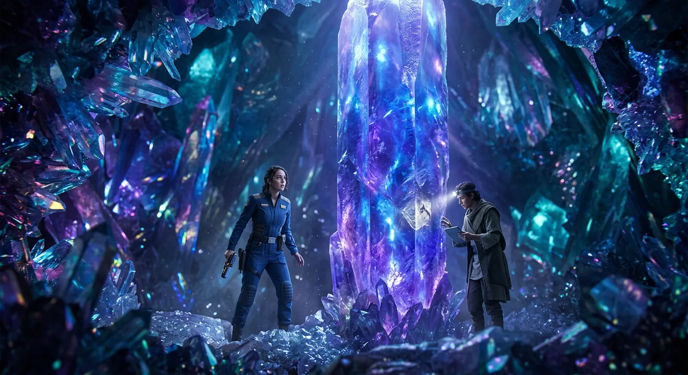
Watched by Vast and Unsympathetic Minds
In those final, drowsy years of the nineteenth century, humanity busied itself with the pleasant trivialities of empire and progress, wholly unaware that vast intelligences regarded our green and watered world with calculating envy. Across the gulf of space, minds as superior to ours as ours are to the beasts watched the Earth with instruments beyond human imagining—scrutinising us, perhaps, as a scientist might study the ephemeral creatures teeming in a droplet of water. With infinite complacency, men dismissed the very notion of life upon other worlds, or if they entertained it at all, imagined only primitive beings who might welcome missionaries. Such was the comfortable blindness of those departed days.
Mars, that ancient and dying world, had long since begun its descent into frozen exhaustion. Its oceans had shrunk to mere thirds of their former glory, its atmosphere grown thin and bitter, its polar caps swelling and retreating with the slow rhythm of alien seasons. Where Earth remained lush with vegetation and teeming seas, Mars had become a world of desperate necessity—and necessity, as it so often does, had sharpened the intellects of its inhabitants into something cold and pitiless. Looking sunward, they beheld our planet as a morning star of hope, a refuge crowded with life they deemed inferior, ripe for conquest. To carry warfare toward the sun was their only salvation.
Before we judge them too harshly, we might recall our own species' ruthless history—the vanished bison, the extinct dodo, the Tasmanians swept from existence by European settlers within fifty years. Are we such paragons of mercy that we might protest if the Martians acted in the same spirit?
Their preparations proceeded with mathematical precision and perfect unanimity. As early as 1894, astronomers observed strange lights upon the Martian surface—the casting, perhaps, of the great gun from which their projectiles would be launched. Yet these observations stirred no alarm. When the storm finally burst, it announced itself through Lavelle of Java, whose instruments detected a colossal jet of incandescent gas erupting from Mars and hurtling earthward. The newspapers printed scarcely a word of it.
I might have remained ignorant myself had I not encountered Ogilvy, the astronomer, at Ottershaw. That night, trembling with excitement, he invited me to observe the red planet through his telescope. I remember the vigil distinctly—the black observatory, the feeble lantern glow, the steady ticking of clockwork, and through the eyepiece, Mars itself: a silvery disc no larger than a pin's head of light, impossibly remote across forty million miles of void. Even as I watched, invisible missiles were already speeding toward us through that unfathomable darkness.
At midnight, I witnessed another flash at the planet's edge—another projectile launched. Ogilvy dismissed talk of intelligent signals, insisting the phenomena must be volcanic or meteoric. "The chances against anything manlike on Mars," he declared, "are a million to one."
For ten consecutive nights, the flames appeared, then ceased. The daily papers finally took notice, treating the matter as scientific curiosity, fodder for cartoons in *Punch*. Meanwhile, the missiles drew earthward at thousands of miles per second, and humanity continued its petty concerns undisturbed. Markham celebrated his new photograph of Mars; I occupied myself learning to ride a bicycle and writing papers on moral philosophy.
One warm, starlit evening, I walked with my wife and pointed out Mars creeping toward the zenith—that bright dot toward which so many telescopes now aimed. Excursionists passed us singing; signal lights glowed red, green, and yellow against the railway framework; the distant sound of shunting trains softened into something almost like melody. It all seemed so impossibly safe and tranquil, that last quiet night before everything we knew would be shattered beyond recognition.
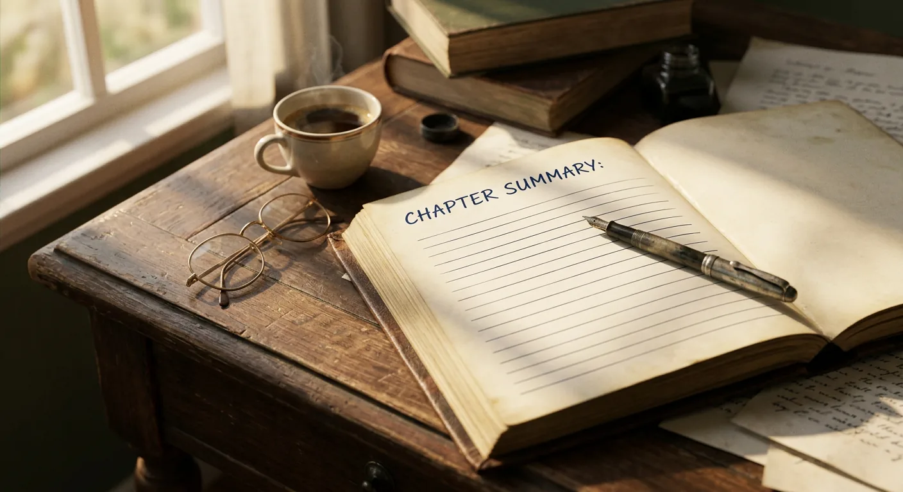
A Cylinder Unscrews at Dawn
The night brought with it a harbinger from the heavens—a falling star that blazed eastward over Winchester in the early morning hours, trailing a greenish phosphorescent streak that lingered momentarily against the darkness before fading into memory. Hundreds witnessed its descent, dismissing it as nothing more remarkable than a common meteorite. The authorities weighed in with their calculations: Denning, that preeminent scholar of celestial debris, estimated its first appearance at some ninety or one hundred miles above the earth, its trajectory carrying it to ground perhaps a hundred miles to the east.
And yet, while this strangest of all arrivals from the void of space plummeted to earth, one man sat oblivious in his study, French windows thrown open to the night sky he so loved to contemplate, seeing nothing of the spectacle that passed before him. The irony was not lost—had he merely glanced upward at the precise moment, he would have witnessed the beginning of everything that was to follow.
It fell to poor Ogilvy—that earnest astronomer—to make the discovery. Convinced that a meteorite lay waiting somewhere upon the common between Horsell, Ottershaw, and Woking, he rose with the dawn and set out to claim his prize. He found it soon enough, not far from the sand-pits, where an enormous crater had been gouged into the earth by the violence of impact. Sand and gravel lay scattered in great heaps visible from a mile and a half distant, and the heather smouldered eastward, sending thin blue smoke curling against the brightening sky.
The Thing lay half-buried in the sand, surrounded by the shattered remnants of a fir tree it had destroyed in its descent. But this was no rounded meteorite—it was a cylinder, some thirty yards in diameter, its surface caked with a thick, scaly incrustation the colour of dun earth. Still radiating heat from its passage through the atmosphere, it forbade close approach. Ogilvy stood at the pit's edge, dimly perceiving even then some evidence of design in its arrival, listening to faint stirring sounds from within that he attributed to unequal cooling.
Then the ash began to fall. Flakes of grey clinker rained down from the circular end, and Ogilvy noticed—with dawning comprehension that sent his heart hammering—that the top of the cylinder was rotating. Slowly, inexorably, a black mark he had observed moved along the circumference, accompanied by a muffled grating sound. The truth struck him like lightning: the cylinder was artificial, hollow, and something within was unscrewing the top.
"Good heavens!" he cried. "There's a man in it—men in it! Half roasted to death! Trying to escape!"
In that instant, his mind leaped to connect the Thing with the strange flash observed upon Mars. Driven by compassion for whatever creature lay confined within, he nearly burned his hands attempting to help before the dull radiation arrested him. Instead, he fled toward Woking, wild-eyed and hatless, meeting only disbelief—a waggoner who drove on, a potman who tried to lock him away as a lunatic. Only Henderson, the London journalist, proved willing to listen, and together they returned to find the cylinder unchanged but silent, a thin circle of bright metal now visible where air hissed at the rim.
Unable to help, they shouted promises and hurried back to town. Henderson telegraphed London, and by eight o'clock, boys and unemployed men were streaming toward the common to see the "dead men from Mars." The narrator himself heard the news from his paperboy and, startled beyond measure, set off immediately for the sand-pits to witness for himself what had fallen from the sky.
What awaited him there would prove far more terrible than any dead men from another world.
The rest is waiting.
58 illustrated classics. Cinematic, anime, and kids editions. $4.99 a month — about the price of a coffee.
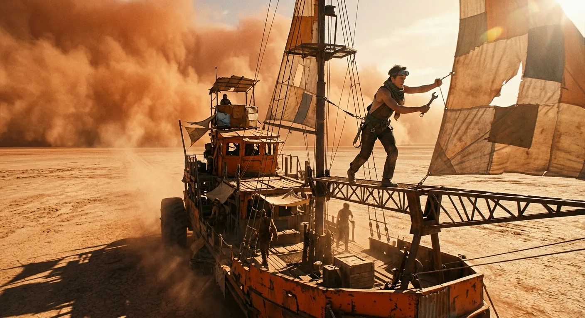
The Cylinder Draws a Crowd
The cylinder lay embedded in its pit like some vast iron seed planted by cosmic hands, the turf and gravel about it charred black from the violence of its arrival. When I first returned that morning, I found perhaps twenty souls gathered round the hole—a modest congregation of the curious, the idle, and the bewildered. Henderson and Ogilvy had departed for breakfast, having sensibly concluded that nothing could be done until the thing cooled. In their absence, a handful of boys had taken to perching on the pit's edge, their legs swinging over the void as they hurled stones at the colossal mass below. I put a stop to that quickly enough, and they scattered into a game of touch among the bystanders.
What a peculiar assembly we made that morning: cyclists and caddies, a gardener I sometimes employed, Gregg the butcher with his boy, a girl balancing a baby on her hip, and the usual assortment of loafers who congregate wherever something unusual promises to break the tedium of ordinary life. There was little conversation. Most of these common folk possessed only the vaguest notions of astronomy, and I suspect they had expected charred corpses or some spectacular horror—not this inert, rust-coloured bulk that might have been nothing more remarkable than an overturned carriage or a gasworks float tumbled from the sky.
I clambered down into the pit myself and fancied I detected a faint stirring beneath my feet. The top had ceased its rotation. Only at such close proximity did the strangeness of the object reveal itself—the grey scaling unlike any common oxide, the unfamiliar yellowish-white metal gleaming in the crack between lid and cylinder. "Extra-terrestrial" held no meaning for my fellow observers, but I understood well enough that this Thing had journeyed from Mars. Still, I doubted it contained living creatures. I imagined instead manuscripts, coins, models—artifacts we might puzzle over for decades. Yet its sheer size unsettled such comfortable speculation.
By afternoon, everything had changed. The evening papers had erupted with their enormous headlines—*A MESSAGE RECEIVED FROM MARS*—and Ogilvy's telegram had roused every observatory in Britain. The common now swarmed with visitors: flys and carriages from Woking station, a basket-chaise from Chobham, heaps of bicycles, and crowds who had walked miles through the punishing heat from Woking and Chertsey. Ladies in bright summer dress mingled with labourers and schoolboys. An enterprising sweet-stuff dealer had dispatched his son with a barrow of green apples and ginger beer.
The pit itself had become a site of organized excavation. Henderson and Ogilvy worked alongside Stent, the Astronomer Royal—a tall, fair-haired man whose crimson face streamed with perspiration as he barked directions at workmen wielding spades and pickaxes. A large portion of the cylinder had been uncovered, though its base remained buried. Ogilvy spotted me in the crowd and called me down, requesting I seek out Lord Hilton to arrange for railings and assistance in managing the growing throng. The boys especially had become a serious impediment. He mentioned that faint stirrings could still be heard within the case, though the workmen had failed to unscrew the top—the thing afforded no grip, and its walls appeared enormously thick.
I went gladly, pleased to secure my place among the privileged observers. Lord Hilton proved absent from his house, expected back from London on the six o'clock train from Waterloo. I returned home for tea, then walked up to the station to intercept him, my mind turning over all I had witnessed—and all that might yet emerge from that mysterious cylinder as darkness gathered over Horsell Common.
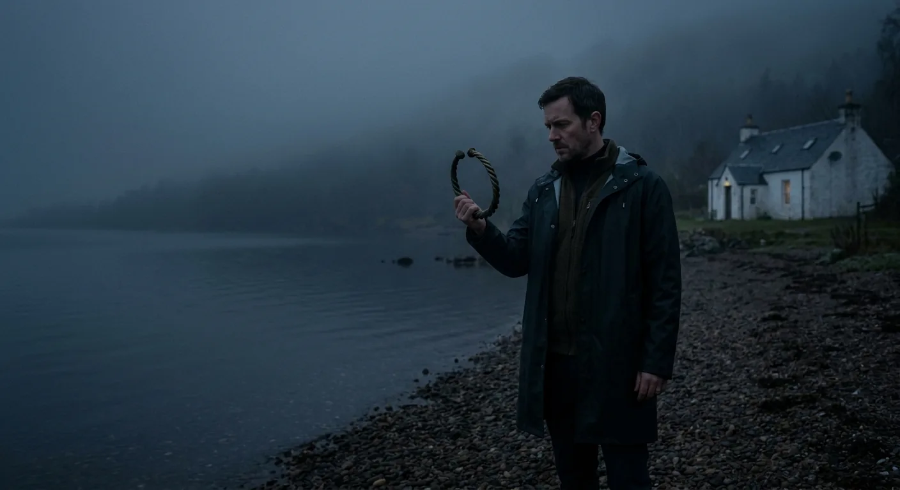
Humanity Meets Its Alien Terror
The sun hung low in a lemon-yellow sky when the narrator returned to the common, where the crowd had swelled to perhaps two or three hundred souls, all pressing and jostling about the pit in a black mass silhouetted against the fading light. Something had changed in the atmosphere—voices were raised, a struggle seemed underway, and a boy came running past with breathless warning: the thing inside was moving, screwing itself out from within.
The crowd surged and swayed with restless energy. Ogilvy called out for help keeping the curious onlookers at bay, for no one yet knew what the confounded cylinder contained. A young shopman from Woking had been pushed by the press of bodies onto the cylinder itself and was struggling to climb free of the pit. All the while, a peculiar humming emanated from below, and nearly two feet of shining screw had emerged, turning steadily from some mechanism within.
Then the lid fell away with a ringing concussion upon the gravel, and every eye fixed upon that circular opening, now perfectly black against the dying light. What emerged was nothing any of them had prepared themselves to witness. They had expected a man—perhaps strange and foreign to Earth, but recognizably human in essence. What rose instead from that shadowed cavity defied such comfortable assumptions.
First came greyish, billowy movements within the darkness, then two luminous disks that might have been eyes. A tentacle like a grey snake, thick as a walking stick, coiled upward and wriggled toward the crowd. Then another. A woman shrieked. The astonishment that had held them rooted transformed swiftly into horror, and the multitude began its retreat, scrambling backward from the pit's edge.
The creature that heaved itself into view was a rounded bulk the size of a bear, glistening like wet leather as it caught the light. Its immense dark eyes regarded the narrator with terrible steadiness. Below them gaped a V-shaped mouth, lipless and quivering, from which saliva dripped. Tentacles gripped and swayed. The whole mass pulsated with labored, convulsive breathing—a being struggling against Earth's heavier gravity, at once vital and crippled, intense and monstrous. There was something fungoid in its oily brown skin, something unspeakably nasty in its clumsy, deliberate movements. Disgust and dread seized the narrator completely.
The creature toppled over the cylinder's brim and fell into the pit with a heavy, leathery thud. Another dark shape appeared in the aperture behind it.
The narrator fled, running madly for a stand of pine trees a hundred yards distant, though he could not help but look back even as he stumbled forward. From his shelter among the furze bushes, he watched the common dotted with frozen figures, all transfixed by the same half-fascinated terror. Then came a fresh horror: the shopman's head bobbed at the pit's edge, struggling to climb free. A shoulder emerged, a knee—then he slipped back, vanished entirely, and a faint shriek seemed to carry across the distance. The impulse to help him flickered and died beneath the weight of overwhelming fear.
The scene that remained was eerie in its stillness—a ragged circle of humanity scattered among ditches, hedges, and gates, speaking little, staring hard at heaps of sand that concealed unspeakable things. A barrow of ginger beer stood abandoned like a strange monument, and horses in their harnesses pawed the ground beside deserted vehicles, oblivious to the terror that had scattered their masters.
What would come next from that pit, none could say—but the nightmare had only just begun to unfold.
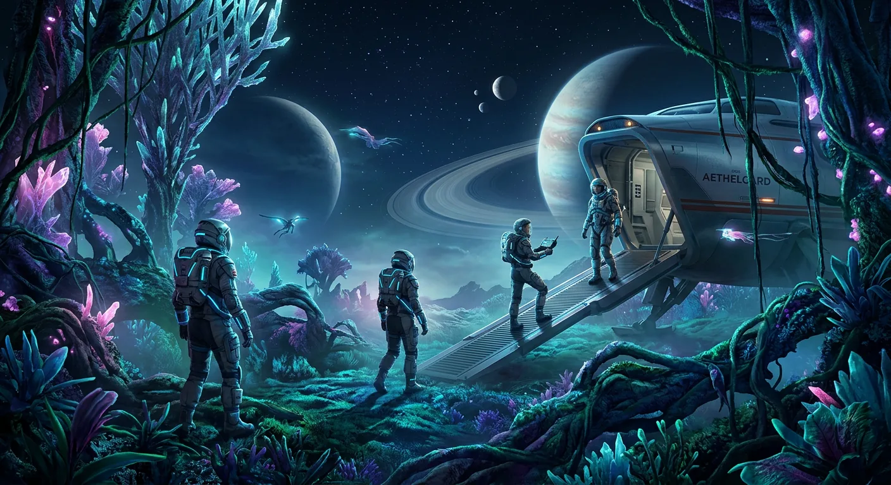
Death Leaping From Man to Man
Standing knee-deep in heather, frozen between terror and fascination, the narrator found himself unable to retreat from the pit where the Martians had emerged, yet equally unable to approach it directly. Instead, he traced a wide arc across the common, his eyes fixed upon the sand-heaps that concealed Earth's unwelcome visitors. Strange movements caught his attention—thin black appendages, whip-like and horrible, flashed momentarily across the fading sunset before withdrawing into the pit. A jointed rod ascended, bearing at its tip a wobbling circular disk that spun with peculiar purpose.
The scattered spectators shared his paralysis of will. Groups had formed at various distances—one cluster toward Woking, another near Chobham—all watching, all waiting. A neighbour approached, though the narrator knew him only by proximity, not by name. The man could manage nothing beyond a repeated exclamation of disgust at the creatures' appearance. Conversation proved impossible; instead, they stood together in the diminishing light, drawing what small comfort they could from shared company before drifting apart.
As twilight deepened and the pit remained still, courage began to reassert itself among the watchers. New arrivals from Woking swelled the crowds, and gradually, figures began advancing toward the cylinder—cautious vertical shapes moving in twos and threes, forming a thin crescent that threatened to encircle the excavation. The narrator too felt drawn forward.
Then came the Deputation. A small knot of men advanced from Horsell, the foremost among them waving a white flag in deliberate signal. These were learned men—Ogilvy, Stent, Henderson, and others—who had resolved to demonstrate humanity's intelligence to these repulsive yet evidently rational beings. The flag fluttered right, then left, a gesture of peace and reason extended across the gulf between worlds.
The response came without warning.
Three puffs of luminous green smoke erupted from the pit, so brilliantly incandescent that the deep blue sky seemed to darken by contrast. A faint hissing built into a droning hum. A humped shape rose from the excavation, and from it flickered what appeared to be the ghost of a beam.
What followed defied immediate comprehension. Flashes of white flame leaped from man to man among the delegation, as though each figure had been momentarily transformed into fire itself. By the light of their own annihilation, the narrator watched them stagger and fall, their companions turning to flee. Pine trees exploded into flame. Furze bushes ignited with dull thuds. Across the common toward Knaphill, trees and hedges and wooden structures burst alight in rapid succession.
The invisible blade of heat swept in a steady arc, touching everything in its path with instant destruction. The narrator stood transfixed, watching the flashing line of ignition curve toward him through the heather, too stupefied to move. A horse screamed once and fell silent. The dark ground smoked and crackled. Then, as suddenly as it had begun, the hissing ceased. The dome-like apparatus sank back into the pit.
The common lay transformed—dark, empty, dotted with smoldering patches where moments before crowds had gathered. The delegation with its white flag had simply ceased to exist. Houses near Woking station sent spires of flame into the still evening air. Overhead, stars emerged against the pale western afterglow, indifferent witnesses to the massacre below.
Alone on the darkened heath, the narrator felt terror descend upon him like a physical weight. He turned and ran, stumbling through the heather, weeping as he fled—not from rational fear alone, but from a primal panic that gripped him utterly. He dared not look back, convinced that at any moment the swift and silent death would reach out from the pit to claim him, just as safety seemed within reach.
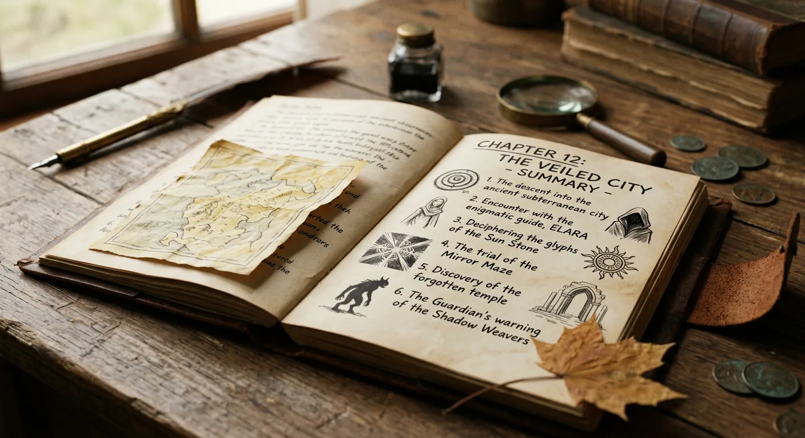
Panic and Death on the Common
What instrument of death the Martians wielded that night remains, even now, incompletely understood. The prevailing theory suggests they generate heat of extraordinary intensity within some chamber of near-perfect insulation, then project it outward in a concentrated beam by means of a polished parabolic mirror—much as a lighthouse casts its warning light across dark waters. Yet whether this explanation holds true in every particular, none can say with certainty. What is certain, what was demonstrated with terrible clarity upon the common, is that the beam is heat made lethal—invisible heat that ignites whatever is combustible, that turns lead to flowing liquid, softens iron, and shatters glass. When it touches water, the water explodes at once into steam.
Beneath the cold indifference of the stars, nearly forty bodies lay scattered about the pit that night, charred beyond all hope of recognition. The common stretching from Horsell to Maybury burned bright and deserted through the long dark hours.
Word of the massacre spread to Chobham, Woking, and Ottershaw at roughly the same hour. In Woking, the shops had already shuttered for the evening when catastrophe struck, and so it happened that shopkeepers and their customers, drawn by the curious tales circulating through town, set out walking toward Horsell Bridge and along the hedgerow-lined road that opens eventually onto the common. One might easily picture them—young people especially, freshened up after their day's labor, seizing upon this strange novelty as pretext for an evening stroll and innocent flirtation. The murmur of their voices carried through the gathering dusk.
Few among them knew the cylinder had opened. Poor Henderson had dispatched a cyclist to wire the evening papers, but the news had not yet spread. As the townspeople emerged in pairs and small groups onto open ground, they encountered clusters of excited onlookers gazing at the strange spinning mirror above the sand-pits, and the newcomers quickly caught the contagion of curiosity.
By half past eight—the very moment the Deputation met its end—perhaps three hundred souls had gathered there, with still more venturing closer to inspect the Martians. Three policemen, one mounted, labored under Stent's direction to keep the crowd at bay, though their efforts met with jeers from those excitable types for whom any gathering serves as occasion for noise.
Stent and Ogilvy, foreseeing possible violence, had telegraphed the barracks for soldiers to protect these alien visitors from harm—a concern that would prove grimly ironic. Then they returned to lead that doomed diplomatic approach. The crowd's account of their deaths matches precisely what I myself witnessed: three puffs of green smoke, the deep humming note, the sudden flashes of flame.
Yet that crowd escaped by the narrowest margin imaginable. A low hummock of heathery sand intercepted the Heat-Ray's lower arc; had the parabolic mirror been elevated but a few yards higher, not one would have survived. They watched the flashes, saw men crumple and fall, witnessed an invisible hand lighting bushes as it swept toward them through the twilight. The beam passed close overhead with a rising whistle, igniting the tops of the beech trees, splitting bricks, shattering windows, setting frames ablaze, and bringing down a portion of the nearest house in crumbling ruin.
In the sudden thud and hiss and glare of burning trees, the crowd swayed in momentary paralysis. Sparks rained down. Burning twigs fell into the road. Leaves drifted past like puffs of flame, catching hats and dresses alight. Then came screaming from the common, and a mounted policeman galloped through the chaos, hands clasped over his head.
"They're coming!" a woman shrieked, and at once the entire mass turned, pushing, shoving, desperate to flee toward Woking. They ran as blindly as panicked sheep. Where the road narrowed between high banks, the crowd jammed together, and in that terrible crush, three at least—two women and a small boy—were trampled and left to die in the darkness and the terror.
And so the Martians had announced, with fire and death, that they had not come to parley—and the true nature of the invasion was only beginning to reveal itself.
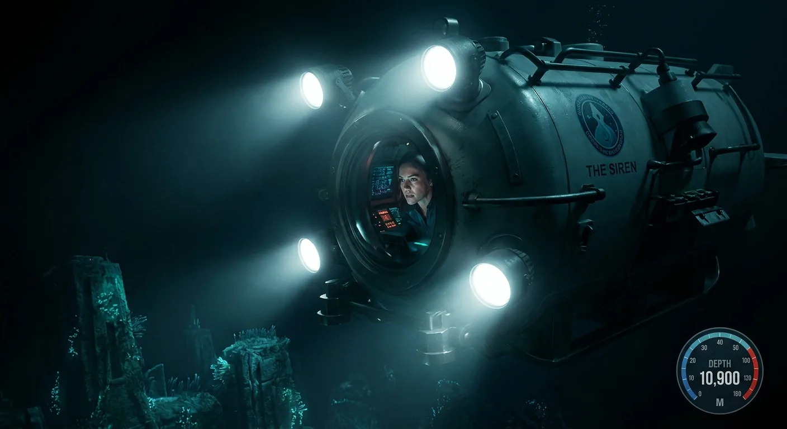
Flight Through Terror and Disbelief
The flight from the common passed in fragments—a blur of heather and trees, the terror of that invisible heat-sword swinging through the darkness, promising death with every arc. Memory failed where panic took hold, and consciousness returned only near the bridge by the gasworks, where exhaustion had finally claimed its due. There, collapsed by the wayside, the weight of flight gave way to something stranger still: a peculiar calm, as though the horror had been shed like a sodden garment.
Rising unsteadily, the bridge seemed an impossible incline. The collar had burst from its fastener, the hat vanished somewhere in that desperate scramble across the heath. Yet the mind, only moments before consumed by the immensity of night and the certainty of annihilation, had shifted without warning into ordinary rhythms. The flames, the screaming, the pitiless Martian machinery—all of it receded into the texture of dream. Could such things have truly happened? The question hung unanswered as a workman passed with his basket and boy, offering a pleasant good night that received only a mumbled reply.
The world beyond the bridge insisted upon its normalcy with maddening persistence. A train thundered south over the Maybury arch, windows blazing, smoke billowing white against the darkness. At Oriental Terrace, neighbours gathered at their gates in easy conversation. The gasworks hummed with business; the electric lamps burned steady and bright. All of it so achingly familiar, so utterly mundane—while not two miles distant, death flew swift and terrible across the common.
The attempt to warn them proved useless. Three figures at the gate—two men and a woman—met the news of Martians with laughter, dismissing the broken sentences as the ramblings of someone gone "fair silly about the common." The words would not come properly; the enormity of what had been witnessed refused translation into ordinary speech. Let them laugh, then. They would hear more soon enough.
Home offered sanctuary of a different sort. The wife's face went white as the tale unfolded, the cold dinner sitting forgotten while the horrors spilled out across the familiar dining room. Yet even in the telling, reassurance crept in unbidden. The creatures were sluggish, barely able to crawl from their pit. They could not possibly survive Earth's crushing gravity—their own bodies would become prisons of lead. Ogilvy himself had said as much, and surely *The Times* would confirm it in the morning.
Wine and food worked their gentle alchemy. The terror of the common gave way to the confidence of one's own table, the pink lamplight casting its warm glow over silver and glass, the crimson-purple wine catching the light. The Martians, it seemed clear now, had made a foolish miscalculation. Mad with terror themselves, perhaps, finding intelligent life where they expected none. A single shell dropped into that pit would end the matter decisively.
So might some respectable dodo have held court in its Mauritian nest, dismissing the arrival of hungry sailors with comfortable certainty: *We will peck them to death tomorrow, my dear.*
But that dinner—the sweet anxious face beneath the pink lampshade, the philosophical writer's modest luxuries spread across white linen—would prove the last taste of civilisation for many strange and terrible days to come, though no warning came to mark its passing.
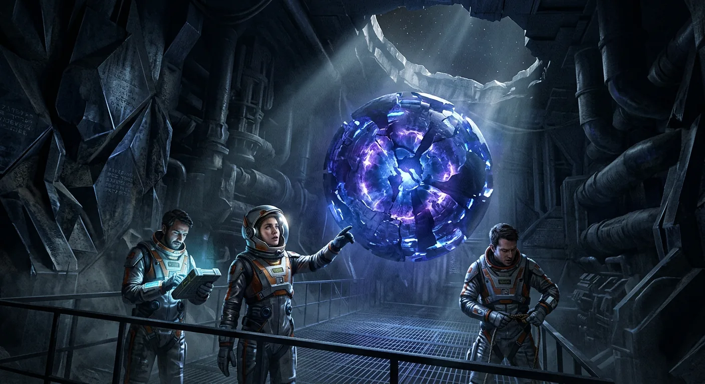
Life Continues as the Poison Spreads
The most remarkable aspect of that Friday—amid all its strange and terrible occurrences—was the peculiar way ordinary life continued to flow alongside the beginning of catastrophe. Had one drawn a circle of five miles around the Woking sand-pits, scarcely a soul beyond its circumference would have felt their emotions or habits disturbed by our visitors from Mars, save perhaps some relation of poor Stent or of those cyclists and Londoners whose bodies now lay cooling on the common. The cylinder had been spoken of, certainly, discussed over dinner tables and in idle moments, but it caused no greater stir than might a curious astronomical footnote. An ultimatum to Germany would have provoked far more excitement.
In London, Henderson's telegram—that desperate account of the cylinder unscrewing—was dismissed as fabrication. His paper wired back demanding confirmation, and when no reply came (the man being dead), they declined to print a special edition. The great metropolis slumbered on, oblivious.
Even within that five-mile radius, the great mass of humanity remained curiously inert. People dined and supped as they always had. Working men tended their gardens in the evening cool. Children were tucked into bed while young lovers wandered the darkening lanes. Students bent over their books, and the rhythm of eating, drinking, sleeping, working continued as it had for countless generations—as though no planet Mars hung in the heavens at all.
At Woking station, trains arrived and departed with clockwork regularity. Passengers alighted, waited, departed again. A boy hawked evening papers, his cries of "Men from Mars!" mingling with the clang of shunting trucks and the sharp whistle of engines. When excited men burst into the station around nine o'clock bearing incredible news, they caused no more commotion than common drunkards. Travellers bound for London peered through carriage windows into the darkness, glimpsed perhaps a flickering spark or reddish glow toward Horsell, and thought nothing more serious than a heath fire was underway.
Only at the common's edge did true disturbance reign. Half a dozen villas burned along the Woking border. Lights blazed in every house facing the common, their occupants wakeful until dawn. Restless crowds gathered on the Chobham and Horsell bridges—people arriving, departing, yet the crowd itself persisting. A few bold souls crept through the darkness toward the Martians, but none returned; periodically that terrible beam swept the common like a warship's searchlight, the Heat-Ray poised to follow.
So stood matters on Friday night: at the centre, the cylinder embedded in old Earth like a poisoned dart, though the poison had scarcely begun its work. Around it spread silent, smouldering common, scattered with dark contorted shapes and burning vegetation. Beyond lay a fringe of agitation, and beyond that fringe, nothing yet. The stream of human life flowed on as it had for immemorial years. The fever of war that would soon clog vein and artery, deaden nerve and destroy brain, had not yet developed.
Throughout the night the Martians hammered and stirred, sleepless and indefatigable, labouring over their machines while greenish-white smoke puffed toward the stars. Around eleven, soldiers deployed along the common's edge. Military authorities grasped the gravity of the situation—a squadron of hussars, Maxim guns, and four hundred men of the Cardigan regiment were ordered from Aldershot.
Then, seconds after midnight, the crowd on Chertsey road witnessed a star fall from heaven into the northwestern pine woods, trailing greenish light like summer lightning.
The second cylinder had arrived, and with it, the promise of horrors yet unimagined.
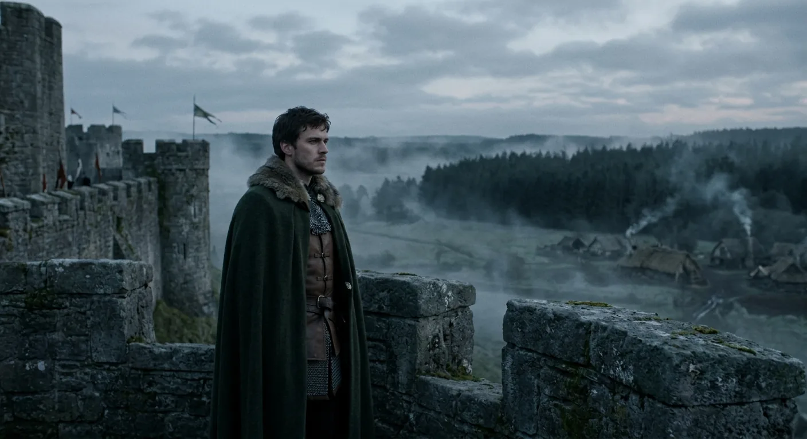
Calm Before the Martian Storm
Saturday dawned as a day suspended between the ordinary and the unthinkable—a peculiar morning of oppressive heat and restless waiting, when the world seemed to hold its breath even as it went through its familiar motions. I had scarcely slept, though my wife had managed some rest, and I found myself in the garden before breakfast, straining to hear any sound from the direction of the common. There was nothing but a solitary lark.
The milkman arrived with his usual clatter, bringing news that troops had encircled the Martians overnight and that guns were being brought up. The sound of a train running towards Woking provided a strange comfort—that reassuring rhythm of normalcy persisting against the impossible. My neighbour appeared at his gardening, cheerfully optimistic that the military would sort out the invaders by day's end. He offered me strawberries across the fence while mentioning that a second cylinder had fallen near the Byfleet Golf Links, setting the pine woods ablaze. He laughed about the insurance costs, then grew sombre remembering poor Ogilvy.
I walked toward the common after breakfast, finding soldiers at the railway bridge—sappers in their dirty red jackets—who barred passage across the canal. None had seen the Martians themselves, and they peppered me with questions when I described what I had witnessed. They debated tactics with rough good humour: whether to rush the creatures, dig trenches, or shell them outright. One dark little man called them octopuses, joking about fishers of men become fighters of fish.
The long morning and longer afternoon brought only frustration and heat. The military had seized every vantage point; officers remained mysterious, soldiers knew nothing. In town, people had regained their confidence in the presence of the troops, though I learned that Marshall the tobacconist's son lay dead on the common. The Martians remained hidden in their pit, hammering away at some unknown work, ignoring all attempts at signalling as completely as we might ignore the lowing of cattle.
I confess that all this preparation excited me. My imagination ran wild with visions of victory, schoolboy dreams of heroism returning unbidden. It hardly seemed a fair fight—they appeared so helpless in their pit.
Around three o'clock, guns began firing from Chertsey or Addlestone, shelling the second cylinder before it could open. By five, a field gun had reached Chobham for the first Martians. Then, at six, as my wife and I took tea in the summerhouse discussing the coming battle, everything changed in an instant.
A muffled detonation from the common, a gust of firing, and then a violent crash that shook the very ground beneath us. I rushed to the lawn and watched the trees around the Oriental College explode into smoky red flame, the church tower crumble into ruin, the mosque pinnacle vanish. One of our own chimneys cracked and scattered red fragments across the flower bed. With terrible clarity, I understood: Maybury Hill now lay within range of the Heat-Ray.
I seized my wife's arm and ran her into the road without ceremony, then fetched the servant. There was no question of staying. Leatherhead—her cousins at Leatherhead—that was our destination. Hussars galloped past under the railway bridge as the sun shone blood-red through the rising smoke. I ran to the Spotted Dog, secured the landlord's horse and cart for two pounds, and rushed home to gather what valuables I could while the beech trees below our house blazed and the palings along the road glowed crimson.
A dismounted hussar passed, shouting something about the Martians crawling out in a thing like a dish cover. I loaded my servant's box, took up the reins, and in moments we were clear of the smoke, driving down the opposite slope toward Old Woking. Behind us, thick black streamers shot with red fire climbed into the still air, stretching from the Byfleet woods to Woking itself. The faint whirr of machine-guns and cracking of rifles drifted through the hot, quiet air as the Martians set fire to everything within reach of their terrible weapon.
I whipped the horse onward, putting Woking and Send between us and that quivering tumult, racing toward Leatherhead and whatever uncertain safety awaited there.
Midnight Journey Through Fire and Lightning
The twelve miles between Maybury Hill and Leatherhead passed through countryside achingly beautiful in its innocence—lush meadows heavy with the scent of hay, hedgerows festooned with dog-roses in their summer glory. The thunder of artillery that had accompanied their departure fell silent as abruptly as it had begun, and by nine o'clock the narrator had delivered his wife safely to her cousins, commending her to their care while the horse rested and he took supper.
Throughout their journey, his wife had remained curiously silent, burdened by some dark presentiment she could not articulate. He had tried to reassure her, speaking of how the Martians were surely trapped by their own immense weight, capable of little more than crawling from their pit. She answered only in monosyllables, and when they parted, her face was deathly white. Had it not been for his promise to return the innkeeper's horse and cart, she would have begged him to stay. How he would come to wish he had.
But a strange fever burned in his blood that night—something very like war-madness, that peculiar excitement that sometimes seizes civilized men when violence draws near. In his heart, he was not sorry to be returning to Maybury. He wanted, he would later confess, to be in at the death.
The night that swallowed him when he departed near eleven o'clock was black as pitch and close as fever. Overhead, clouds raced across the sky though not a breath of wind stirred below. His wife watched from the lighted doorway until he mounted the dog cart, then turned abruptly and disappeared inside—a final image that would haunt him. Along the western horizon, a blood-red glow crept steadily upward, mingling with storm clouds and columns of black smoke.
Through Ripley's deserted streets he drove, past silent houses whose inhabitants might have been sleeping peacefully or cowering in terror—he could not know. As he crested the hill beyond Pyrford Church, midnight tolling behind him, the red glare of destruction spread before him and the first tremors of the coming storm shivered through the trees.
Then came the third falling star—a thread of green fire piercing the clouds and plunging into the field beside him. Lightning exploded violet across the sky, thunder cracked like some gigantic electrical machine, and the horse bolted in terror.
What he saw next defied comprehension. Descending Maybury Hill in the staccato illumination of the lightning came something he first mistook for a moving rooftop—a monstrous tripod, higher than houses, striding through pine trees and smashing them aside like reeds. A walking engine of glittering metal with articulate ropes of steel dangling from its frame, its passage a clattering tumult beneath the riot of thunder. Then a second appeared, rushing headlong toward him.
His nerve shattered completely. He wrenched the horse's head round, the cart heeled over, shafts splintered, and he was flung into a shallow pool. The horse lay dead, neck broken, while the wheel of the overturned cart spun slowly in the lightning's glare. The colossal mechanism strode past him—no mere insensate machine but something that moved with terrible purpose, its brazen hood swiveling with the unmistakable suggestion of a head looking about, flexible tentacles swinging, green smoke puffing from its joints. It loosed an exultant howl that drowned the thunder itself: *Aloo! Aloo!*
Soaked and stupefied, he watched the metal giants converge in the distance over what must have been the third Martian cylinder. Eventually, cold and terror drove him to crawl through ditches and pine woods toward his own house, past the body of a man whose neck had been broken against a fence—the very innkeeper whose horse he had borrowed.
He let himself in with trembling hands, bolted the door behind him, and collapsed at the foot of the staircase, his imagination crowded with striding metal monsters and the dead man's face leaping at him in the lightning's flash, shivering violently against the wall as the storm raged on outside.
Somewhere in Leatherhead, his wife waited for a husband who would not return that night—and the world he had known only hours before had already begun its violent unraveling.
A World Transformed by Fire
The storm of terror had passed through him, leaving behind only the cold awareness of wet clothes and pooling water on the stair carpet. He rose mechanically, seeking whisky in the dining room, then dry garments—the small rituals of a life that had ceased to exist mere hours before. Some instinct drew him upstairs to his study, though he could not say why. The window there faced Horsell Common, left open in the chaos of their departure, and what it framed stopped him cold in the doorway.
The Oriental College had vanished. The pine trees that once surrounded it were gone. In their place, lit by a vivid red glare, the common about the sand-pits stretched before him like a vision from some industrial hell. Huge black shapes moved busily to and fro across the light—grotesque, strange, impossibly purposeful. The whole country seemed ablaze, a broad hillside studded with tongues of flame that swayed and writhed in the dying storm's gusts, throwing crimson reflections upon the clouds above. Smoke drifted across his view, and through it came the sharp, resinous tang of burning.
He crept toward the window, and the panorama of destruction widened before him. The houses about Woking station glowed as ruins. The charred pine woods of Byfleet stretched black and skeletal. Below, near the railway arch, a wrecked train lay smashed and burning, its rear carriages still clinging absurdly to the rails. Between these centres of devastation—houses, train, and the burning county toward Chobham—lay irregular patches of dark country broken by intervals of smoking ground. It reminded him of nothing so much as the Potteries at night, that black expanse set with fire.
This was the little world in which he had lived securely for years. This fiery chaos.
He pulled his desk chair to the window and sat watching the three gigantic black things moving about the sand-pits with what seemed amazing industry. Were they intelligent mechanisms? Or did a Martian sit within each, ruling and directing, as a man's brain rules his body? For the first time in his life, he wondered how an ironclad or steam engine might appear to some intelligent lower animal.
The sky had cleared. Mars itself, a fading pinpoint, was dropping into the west above the smoke of the burning land when a soldier came scrambling over the garden fence. At the sight of another human being, his torpor vanished. He leaned from the window eagerly.
The soldier knew nothing, only that he was trying to hide, that God alone knew where he was going. He was hatless, coat unbuttoned, and when he entered the house, he could only repeat again and again: "They wiped us out—simply wiped us out." Then he collapsed at the dining room table, sobbing like a child.
His story emerged in fragments between whisky and tears. An artillery driver, he had come into action near Horsell only to watch the first fighting-machine rise on tripod legs from behind its metal shield. His horse had stumbled into a rabbit hole, throwing him into a depression just as the gun exploded behind him. He had lain under the charred bodies of men and horses, the smell of burnt meat thick around him, watching the Martians methodically destroy everything that moved upon the common. The Cardigan men had rushed the pit in skirmishing order and been swept out of existence. The hussars had gone silent. Woking station became a heap of fiery ruins in moments.
They ate mutton and bread in darkness, afraid to light a lamp. As the soldier talked, dawn crept through the windows, revealing trampled bushes and broken rose trees. When they climbed to the study and looked out again, the valley had become a valley of ashes. The fires had dwindled to streamers of smoke. The countless ruins of shattered houses and blackened trees stood gaunt and terrible in the pitiless morning light—though here and there some object had escaped, a white railway signal, the end of a greenhouse, strange and fresh amid the wreckage.
Three metallic giants stood about the pit, their cowls rotating slowly as though surveying the desolation they had made, while green vapour puffed upward toward the brightening dawn and the distant pillars of fire about Chobham turned to pillars of bloodshot smoke at the first touch of day.
Whatever came next would find them here, two exhausted men watching the world they knew transform into something unrecognizable.
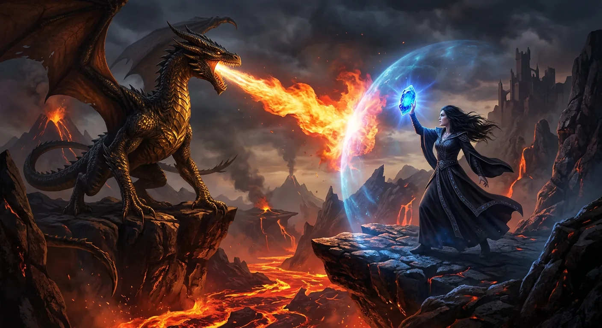
Fleeing Through a Shattered Landscape
As dawn crept pale across the sky, we withdrew from the window where we had kept watch upon those terrible machines through the long night, and descended in whispered conversation to plan our escape. The artilleryman and I were of one mind: the house offered no sanctuary, and we must flee while chance permitted. He meant to strike out for London and rejoin his battery—No. 12 of the Horse Artillery—whilst I burned with a single desperate purpose: to reach Leatherhead, collect my wife, and carry her to Newhaven, out of England entirely. For I had seen enough to know with dreadful certainty that the country about London must become a theatre of catastrophic struggle before such creatures could be destroyed.
Yet between us and Leatherhead lay the third cylinder, guarded by those towering giants. The artilleryman dissuaded me from crossing that deadly ground alone. "It's no kindness to the right sort of wife to make her a widow," he said, and I could not argue against such plain wisdom. We agreed to travel together northward through the woods as far as Street Cobham before parting.
My companion, having served in active campaigns, knew better than to flee empty-handed. He ransacked the house for provisions—filling a flask with whisky, lining our pockets with biscuits and cold meat—before we crept out into the strange stillness of that abandoned morning. Maybury Hill lay deserted beneath us, save for the grim evidence of flight and death: charred bodies huddled where the Heat-Ray had found them, scattered belongings dropped in terror, a horseless cart heeled over on a broken wheel with a smashed cash box thrown beneath the debris.
We pushed through the scarred woodlands—trees blackened and fallen on one side, merely scorched on the other—moving in whispers, starting at every sound. Near the road we encountered cavalry soldiers, hussars bearing a heliograph, who received the artilleryman's account of giants in armour and death-dealing fire with open incredulity. Yet they rode on toward Woking nonetheless, to see for themselves.
The countryside beyond presented a peculiar calm. At Byfleet, farm waggons creaked along country roads whilst artillery pieces stood pointing toward Woking with their crews waiting at attention. "It's bows and arrows against the lightning," the artilleryman remarked grimly. "They 'aven't seen that fire-beam yet."
Weybridge proved a scene of extraordinary confusion—carts and carriages choking every street, respectable citizens in their Sunday best packing frantically whilst their children shrieked with excitement at this disruption of ordinary life. Through it all, the vicar pluckily conducted morning services, his bell clanging above the tumult.
We reached the junction of the Wey and Thames near Shepperton Lock by midday, where crowds jostled for boats to ferry them across. Then came the distant thunder of guns, and almost immediately the Martians appeared—four, then five, striding across the flat meadows with terrifying swiftness, their armoured bodies glittering in the sunlight as they advanced upon the batteries.
At that sight, the crowd fell into a paralysed silence before breaking into panicked flight. I alone perceived our salvation and plunged headlong into the river, shouting for others to follow. From beneath the water, I heard the tremendous concussion of guns—and then, impossibly, a cry of triumph. One Martian had been struck clean in its hood, the shell bursting in the face of the thing, whirling away red flesh and glittering metal. The decapitated colossus reeled drunkenly onward, crashed through Shepperton Church tower, and collapsed into the river in a tremendous explosion of steam and scalding water.
But three Martians remained. As I struggled through water growing hot enough to scald, the Heat-Ray swept across Weybridge, dissolving houses, igniting trees, licking people from the towpath like a tongue of white fire. A wave of near-boiling water rushed upon me. I screamed, staggered toward shore, and collapsed upon the gravelly spit at the rivers' junction, expecting death at any moment.
Through dimming vision I watched the surviving Martians gather the wreckage of their fallen comrade and withdraw across the meadows, their towering forms fading through veils of smoke and steam. Only then, very slowly, did I comprehend that by some impossible mercy I had survived—though what horrors awaited me in the devastated landscape ahead, I could not yet imagine.
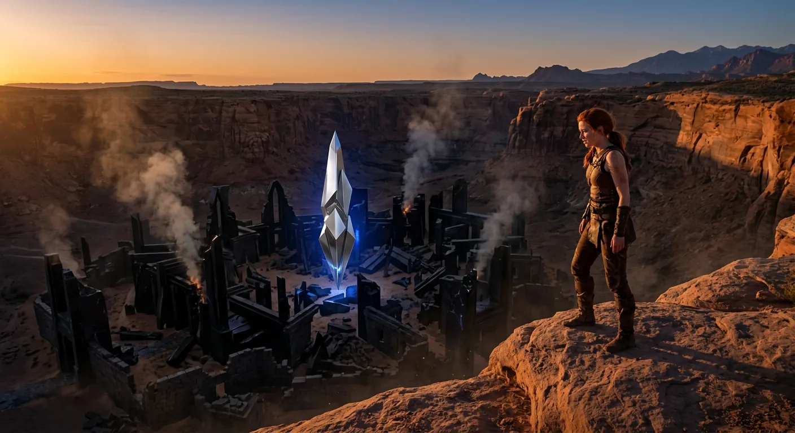
Escape and Encounter Amid Devastation
The Martians had learned caution. After tasting the sting of terrestrial artillery—that sudden, violent lesson dealt by human weapons—they withdrew to their original position upon Horsell Common, burdened with the wreckage of their fallen comrade. In their haste, they overlooked countless insignificant creatures like the narrator, small and stray amid the chaos. Had they pressed forward immediately, nothing stood between them and London save batteries of twelve-pounder guns, and they might have descended upon the capital as suddenly and catastrophically as the earthquake that had levelled Lisbon a century before.
Yet urgency did not govern them. Every twenty-four hours, another cylinder streaked through the heavens, bringing reinforcement upon reinforcement. Meanwhile, the military authorities—now fully awakened to the terrible power they faced—worked with desperate energy. Gun after gun rolled into position until every copse and suburban villa along the slopes of Kingston and Richmond concealed an expectant black muzzle. Across twenty square miles of charred desolation surrounding the Martian encampment, scouts crawled through ruined villages and smoking pine spinneys, carrying heliographs to signal the invaders' approach. But the Martians had grown wise to human proximity; not a man dared venture within a mile of their cylinders without forfeiting his life.
Through that afternoon, the giants laboured, transferring materials from their secondary landing sites to the original pit on Horsell Common. One stood sentinel above the blackened heather while the others descended to work deep into the night, sending up a towering pillar of dense green smoke visible from hills miles distant.
While the Martians prepared behind him and humanity gathered for battle before him, the narrator made his painful escape from burning Weybridge. He spotted an abandoned boat drifting downstream, stripped away his sodden clothes, and swam after it. Without oars, he paddled with scalded hands down the Thames toward Halliford and Walton, constantly watching behind him. Hot water from the Martian's overthrow drifted alongside, obscuring the banks for nearly a mile. He glimpsed black figures fleeing across meadows, houses burning in eerie silence beneath the blue sky, dry reeds smouldering along the shore—all strangely tranquil without the usual crowds that gather round destruction.
Exhausted and fevered, he finally collapsed on the Middlesex bank near Walton Bridge, lying sick among the long grass. He walked, rested, walked again, half-delirious, troubled by an inexplicable anger toward his wife and a desperate, impotent longing to reach Leatherhead.
When awareness returned, he found himself beside a stranger—a curate, soot-smudged and clean-shaven, staring at the flickering heliograph light dancing across a mackerel sky tinged with midsummer sunset. The man's face showed fair weakness: a retreating chin, flaxen curls upon a low forehead, pale blue eyes staring blankly.
"What does it mean?" the curate demanded, his voice almost complaining. "Why are these things permitted? What sins have we done?"
The narrator studied him—a fugitive from Weybridge, clearly driven to the edge of reason by the tremendous tragedy. The curate babbled of Sunday schools destroyed, of the church rebuilt only three years ago now swept from existence, of fire and earthquake and death descending like judgment upon Sodom.
"Be a man," the narrator urged, gripping his shoulder. "What good is religion if it collapses under calamity? Did you think God had exempted Weybridge? He is not an insurance agent."
When the curate despaired that the Martians were invulnerable and pitiless, the narrator reminded him that one had been killed mere hours ago. Human effort persisted—those flickering lights in the sky signalled gathering resistance, earthworks rising, guns positioning. The Martians would come again, but so too would the fight.
A distant rumble of guns rolled across the water, then silence fell, broken only by a droning cockchafer. High in the west, the crescent moon hung pale above the smoke and the hot splendour of sunset.
"We had better follow this path," the narrator said quietly, "northward"—toward whatever fate awaited them both in the gathering storm.
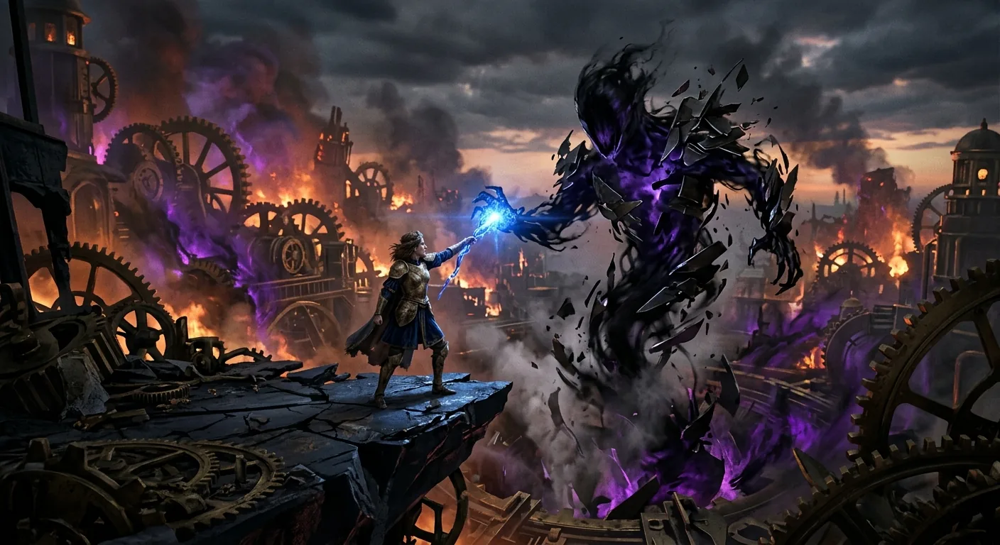
London's Calm Before the Storm
While the narrator fled through the burning countryside toward Leatherhead, his younger brother remained in London, consumed by the ordinary urgencies of a medical student preparing for examinations. The news of the Martian arrival reached him only on Saturday morning, filtered through the cautious language of telegraph dispatches and the comfortable speculation of newspaper leader-writers. The morning papers spoke of Martians trapped in their pit, presumably helpless against Earth's stronger gravity—a reassuring assessment that allowed the biology students in his cramming class to discuss the matter with detached fascination rather than genuine alarm.
Throughout that day, London carried on with its customary indifference to provincial catastrophe. The afternoon papers offered scraps of information beneath sensational headlines, reporting troop movements and burning pine woods, but nothing to suggest the true nature of what was unfolding in Surrey. When telegraphic communication ceased, the explanation offered was mundane: fallen trees across the lines. The brother, confident that the cylinder lay a safe two miles from his sibling's house, dispatched a telegram that would never arrive and spent his evening at a music hall.
At Waterloo station that night, he discovered only that some unspecified accident prevented trains from reaching Woking. The railway officials, understanding nothing of what had actually occurred, busied themselves rerouting theatre trains and Sunday excursions. A reporter mistook him for the traffic manager; few connected the service disruption with the creatures from Mars.
Sunday brought no clarification. Despite later accounts claiming that London awoke electrified by the news, the reality proved far more complacent. Most Londoners did not read Sunday papers, and those who did had grown so accustomed to startling headlines that they absorbed reports of massacred battalions and disabled field guns without personal alarm. The newspapers compared the situation to a menagerie let loose in a village—strange, certainly, but ultimately containable.
At Waterloo that afternoon, the brother gathered fragments of information from porters and passengers alike—telegrams from Byfleet that had abruptly ceased, fighting around Weybridge, refugees streaming into Kingston with tales of heavy firing and mounted soldiers warning them to flee. The station filled with confused travelers, and then came the guns—enormous weapons from Woolwich and Chatham, transported through the normally closed connection between railway lines, soldiers exchanging grim pleasantries about being "beast-tamers."
It was only in Wellington Street, purchasing a still-wet evening paper for threepence, that the brother finally grasped the magnitude of the horror. The Martians were not sluggish creatures crawling helplessly—they were vast spiderlike machines, nearly a hundred feet tall, moving with the speed of express trains and wielding beams of intense heat that annihilated batteries and soldiers alike. One had been destroyed by fortunate chance, but the rest had retreated to regroup. The dispatch spoke of 116 guns being positioned around London, of high explosives being manufactured, of elaborate measures for public protection—all wrapped in official assurances that the situation, though grave, remained manageable.
The brother walked through a city that was slowly awakening to its peril. Refugees appeared in Trafalgar Square—haggard families in greengrocers' carts, their faces a stark contrast to the Sabbath-best crowds on the omnibuses. By nightfall, the roads resembled Epsom on Derby Day. Yet Regent Street still held its Sunday promenaders, and couples still walked arm in arm beneath the gas lamps of Regent's Park, even as the sound of distant guns rolled through the warm, oppressive night.
He went to bed after midnight, but the small hours of Monday brought no rest—only the hammering of door knockers, the clamour of church bells, and the policeman's terrible cry: "The Martians are coming!" The Black Smoke had smothered Richmond, Kingston, and Wimbledon, and now six million souls stirred as one, preparing to pour northward in flight.
With ten pounds in his pocket and the dawn growing bright and calm overhead, the brother stepped out into streets that were about to become rivers of terror.
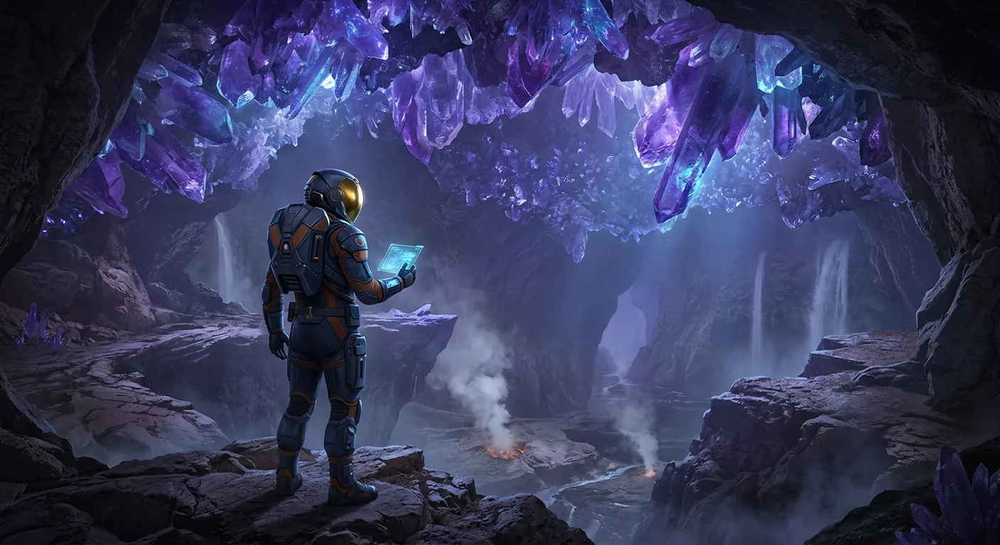
The Martians Resume Their Deadly Advance
While the curate had babbled his frantic nonsense beneath the hedge near Halliford, and while the narrator's brother had stood watching the desperate tide of humanity surge across Westminster Bridge, the Martians had stirred once more to terrible purpose. The greater part of them remained occupied within the Horsell pit until nine that evening, labouring upon some dread operation that sent vast billows of green smoke churning into the darkening sky. But three of their number emerged at eight o'clock, advancing with slow and deliberate menace through Byfleet and Pyrford toward Ripley and Weybridge, until at last they stood silhouetted against the dying sun, facing the waiting batteries.
These three did not move as one body but spread themselves in a line, each separated from its fellows by perhaps a mile and a half, communicating through eerie, sirenlike howls that rose and fell across the scale. The Ripley gunners—untested artillery volunteers who ought never to have been trusted with such a position—fired a single wild and ineffectual volley before fleeing in panic through the empty village. The Martian strode serenely over their abandoned guns without deigning to employ his Heat-Ray.
Yet the men at St. George's Hill proved of sterner mettle. Concealed within a pine wood, they laid their guns with parade-ground precision and fired at a thousand yards. The shells burst around their target, and the great machine staggered and fell. But triumph proved fleeting—a second giant appeared above the trees, and both companions brought their Heat-Rays to bear upon the battery. The ammunition exploded, the pines erupted into flame, and scarcely a man escaped alive.
After this engagement, the Martians consulted amongst themselves and stood motionless for half an hour. Their wounded companion crawled from his cowl—a small brown figure, oddly suggestive of a speck of blight—and set about repairing his damaged support. By nine o'clock, four additional Martians joined the original three, each bearing a thick black tube, and together the seven distributed themselves along a vast crescent stretching from St. George's Hill to Send.
What followed defied all expectation of battle. The Martians raised their tubes and discharged them with heavy, groundshaking reports—no flash, no smoke, merely those loaded detonations echoing across the countryside. Where the canisters struck, they did not explode but shattered, releasing enormous volumes of heavy, inky vapour that coiled upward before sinking earthward, pouring through valleys and ditches like some liquid horror. The touch of this black smoke, the mere inhalation of its pungent wisps, brought instant death to all that breathed.
By midnight, the Martians had methodically spread their suffocating poison across the Londonward country, smoking out humanity as men might clear a wasps' nest. The batteries at Esher, at Ditton, at Richmond—all fell silent beneath that creeping darkness. Sunday night marked the end of organised resistance. After that terrible evening, no body of men would stand against the invaders, so utterly hopeless had the enterprise become.
Before dawn, the black vapour was pouring through the streets of Richmond itself, and the crumbling remnants of government were making one final, desperate effort to rouse the population of London to the necessity of flight.
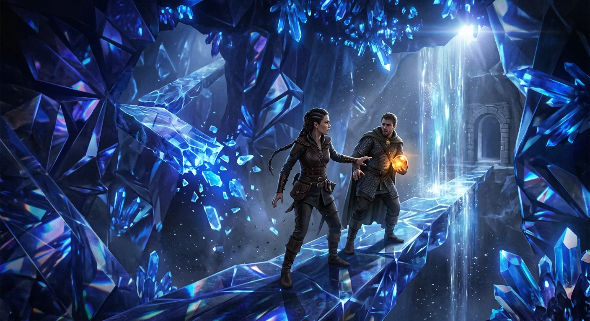
London's Collapse Into Chaos
As Monday's pale light crept over the greatest city in the world, terror swept through London like a roaring wave, rising swiftly into a torrent of humanity that lashed and foamed around the railway stations in a frenzy of desperate escape. By ten o'clock, the police had lost all semblance of order; by midday, even the railways themselves had begun to dissolve, softening and guttering away like candle wax in that swift liquefaction of civilized society.
The scenes at the stations defied comprehension. At three in the morning, people were already being trampled in Bishopsgate Street, hundreds of yards from Liverpool Street station itself. Revolvers cracked in the darkness, knives flashed, and the very policemen sent to protect the fleeing masses found themselves breaking heads in exhausted fury. When engine drivers and stokers refused to return to the doomed city, the pressure of flight drove the multitudes away from the platforms and onto the northward roads in ever-thickening streams. A Martian had been spotted at Barnes, and that terrible black vapour crept along the Thames, cutting off all escape over the bridges.
It was amid this chaos that my brother emerged from a fruitless struggle at Chalk Farm, where locomotives had ploughed through shrieking crowds and a dozen strong men fought to keep desperate masses from crushing the driver against his own furnace. Fortune favoured him briefly—he managed to be first into a cycle shop during its frantic looting, escaping with nothing worse than a punctured tire and a cut wrist. He struck out through Belsize Road, skirting the worst of the panic, and reached Edgware by seven o'clock, exhausted and hungry but ahead of the flood.
There he rested briefly, watching the procession of fugitives swell—cyclists at first, then motor cars and hansom cabs, all trailing clouds of dust toward St. Albans. Some vague notion of reaching friends in Chelmsford drew him eastward along a quiet lane, where he soon encountered two women who would become his companions in flight—the wife and sister of a surgeon from Stanmore, left alone when their protector failed to overtake them as promised.
He came upon them in desperate circumstances: three ruffians attempting to drag them from their pony-chaise. My brother, an expert boxer, wasted no time on chivalry. He sent one man down against the wheel, laid him quiet with a kick, and grappled with another even as the whip stung his face and a third blow caught him between the eyes. The slender lady—Miss Elphinstone—proved her mettle by returning with a revolver to scatter the remaining attackers with a shot that narrowly missed my brother himself.
So began their unlikely alliance: my brother, bloodied and panting, taking the reins of the chaise while the two women sat shaken but resolute. They made camp by the roadside, sharing what they knew of the Martian advance while wayfarers passed bearing fragments of terrible news. Miss Elphinstone, showing remarkable composure, agreed to my brother's plan of striking across Essex toward Harwich, though her sister-in-law could only weep and call for her absent husband George.
As they approached Barnet, the true horror of the exodus revealed itself. The main road had become a boiling river of humanity—a torrent of horses, carts, carriages, and desperate people pressing northward in a cloud of white dust that made ghosts of them all. Rich and poor, gentle and rough, they surged together in that terrible democracy of terror, their faces marked with fear and pain, their lips cracked and blackened with thirst. Through it all ran a single refrain: "Way! Way! The Martians are coming!"
My brother witnessed scenes of tragedy and madness—a man trampled to death while clutching scattered sovereigns, a dying lord laid on a stretcher beneath a hedge, a little girl sobbing that she could go no further. Yet somehow, through courage and determination, they forced their way across that hellish stream and pressed on eastward through Hadley, until exhaustion finally halted them near East Barnet as evening fell.
There they rested, hungry and cold, none daring to sleep, while behind them the flood of refugees continued its relentless flight from dangers both known and imagined—and ahead lay uncertainties that none could yet fathom.
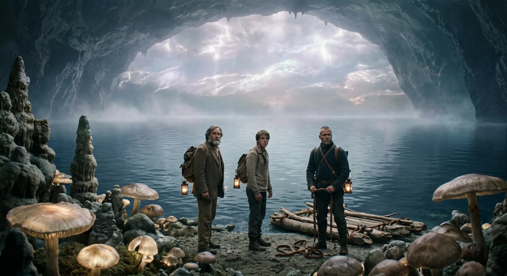
Humanity's Desperate Flight to the Sea
Had the Martians wished only destruction, they might have obliterated London entire that Monday—six million souls streaming outward through every road and lane like black ink spreading across blotting paper. From his brother's account, the narrator paints a vision of exodus unprecedented in human memory: the legendary hordes of Goths and Huns would have been but a drop in this current of desperate humanity. This was no disciplined march but a stampede, gigantic and terrible, without order and without goal—the beginning of civilisation's rout, the massacre of mankind.
The Martians moved methodically through the southern hills, spreading their poison clouds, cutting telegraphs, wrecking railways. They were hamstringing mankind, content not with extermination but with complete demoralisation. The Pool of London became a scene of mad confusion—fugitives fighting for passage on steamers, some thrust off with boathooks to drown, boats jamming beneath Tower Bridge while desperate souls clambered down its very piers. When a Martian waded down the river an hour later, nothing but wreckage floated above Limehouse.
Through Tuesday and into Wednesday, the narrator's brother pressed eastward with Mrs. Elphinstone and her sister-in-law, the three fugitives hearing rumours of Martians at Epping, of the government gathering at Birmingham, of bread distributions that never materialised. Stars continued falling—the sixth at Wimbledon, the seventh upon Primrose Hill, witnessed by Miss Elphinstone herself. At Chelmsford, a Committee of Public Supply seized their pony for provisions, offering nothing but promises in return.
Near Tillingham—strangely silent save for furtive plunderers—they came suddenly in sight of the sea and the most astonishing congregation of shipping imaginable: fishing smacks of every nation, steam launches, yachts, colliers, merchantmen, ocean tramps, even an old white transport. The vessels lay in a vast sickle-shaped curve vanishing into mist. Two miles out sat the ironclad *Thunder Child*, low in the water like something half-drowned, the only warship visible though smoke marked the distant Channel Fleet hovering vigilant yet powerless across the Thames estuary.
Mrs. Elphinstone gave way to hysteria at the prospect of foreign shores, but eventually they secured passage aboard a paddle steamer bound for Ostend. By afternoon, with the decks dangerously crowded, guns began sounding in the south—and then the Martians appeared, three of them stalking seaward through the shallows to intercept the escaping multitude.
What followed would burn itself into every witness's memory. The *Thunder Child*, that vast iron bulk, came charging landward like a plough tearing through water, steaming headlong to the rescue. The Martians, perhaps mistaking this leviathan for another of their kind, hesitated—and that hesitation proved fatal. One discharged the Black Smoke, but it glanced harmlessly off the ironclad's hull. When the Heat-Ray finally struck, driving through iron like white-hot metal through paper, the *Thunder Child* was already upon them. She rammed the first Martian down in an explosion of water and steam, her guns roaring through the chaos. Then, still alive, flames streaming from her middle parts, she drove straight into a second Martian and crumpled him like cardboard.
The cheering erupted across every deck of every fleeing vessel. Two Martians destroyed—humanity's first true victory. But the *Thunder Child* vanished into steam and smoke, and when the air cleared, neither she nor the third Martian could be seen. The ironclads turned southward into the thickening haze, and as the sun sank into grey clouds and twilight deepened, something vast and dark rose slanting from the western sky, sweeping round in an immense curve before vanishing—raining down darkness upon the conquered land.
Thus ended the narrator's brother's account of the exodus; now begins the tale of Earth under Martian dominion, and of those who remained behind to witness humanity's darkest hour.
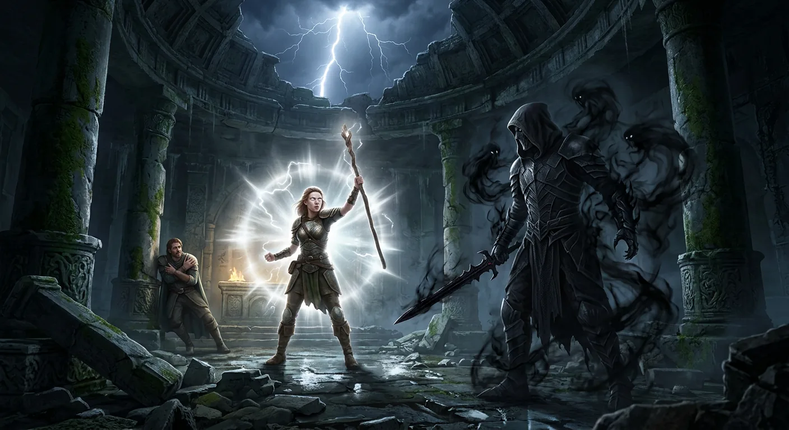
Trapped by Smoke, Freed to Flee
The narrator resumes his account from the empty house at Halliford, where he and the curate have been trapped since fleeing the Black Smoke. For two agonizing days—Sunday night and the day of the panic—they remain marooned in their small island of daylight, cut off from the rest of the world by that deadly vapour. The narrator's thoughts turn ceaselessly to his wife at Leatherhead, and he tortures himself imagining her terror, her grief, perhaps already mourning him as dead. The curate's constant whimpering and selfish despair grate upon his nerves until he retreats to a children's schoolroom, then to a locked box room, seeking solitude for his aching miseries.
By Monday, a Martian strides across the fields, laying waste to the Black Smoke with jets of superheated steam that shatter windows and scald the curate's hand. When the two men finally peer outside, they behold a landscape transformed—blackened as if by some infernal snowstorm, with an unaccountable redness mingling with the scorched meadows near the river. The way of escape lies open at last, and the narrator resolves to press on toward Leatherhead, gathering supplies and preparing to leave the curate behind if necessary. In the end, the curate rouses himself to follow.
Their journey through the devastated countryside proves harrowing. Dead bodies lie contorted in the roads, horses and men alike buried beneath that pall of cindery powder that recalls the destruction of Pompeii. They pass through Hampton Court, Bushey Park, Twickenham, and Richmond, encountering scattered survivors too frightened to speak and evidence everywhere of hasty flight. Near Kew, terror seizes them as a Martian fighting-machine looms overhead, and they watch in frozen horror as the towering thing pursues fleeing figures across a meadow—not destroying them with its Heat-Ray, but gathering them up and tossing them into a great metallic carrier. For the first time, the narrator comprehends that the Martians may have some purpose beyond mere destruction.
They press on through the darkness, creeping along hedgerows, until they reach Sheen and break into houses seeking food and water. In a white house near Mortlake, they discover a pantry stocked with bread, ham, beer, and tinned goods—provisions that will sustain them for the fortnight to come. But as they sit eating in the darkened kitchen, catastrophe strikes: a blinding green flash, a tremendous concussion, and the house collapses around them. When the narrator regains consciousness, bleeding and battered, he and the curate find themselves buried beneath the ruins.
As dawn filters through a triangular gap in the rubble, the terrible truth reveals itself—through that aperture, they glimpse a Martian standing sentinel over a still-glowing cylinder. The fifth shot from Mars has struck this very house and entombed them beneath its wreckage. Now they crouch in the darkness of the scullery, scarcely daring to breathe, listening to the metallic hammering and alien hissing that speaks of incomprehensible activity just beyond the walls.
Trapped in their underground prison with the enemy mere feet away, the narrator and the curate can only wait—and wonder what horrors the Martians are preparing in the pit outside.
Martians Revealed at the Pit's Edge
From the wreckage of that buried scullery, with broken crockery crunching beneath every cautious movement, the narrator pieced together a vision of invasion such as no human eye had yet witnessed so intimately—nor perhaps ever wished to.
The curate had stolen to the aperture first, shoulders hunched against the triangular gap in the debris, while that maddening rhythmic thud persisted like the heartbeat of some colossal engine. When touched, the man started with such violence that plaster cascaded outward, and both men froze in the terrible certainty that discovery meant death. Yet fortune held, and through the widened gap they beheld a transformation beyond reckoning. The fifth cylinder had obliterated the neighbouring house utterly—not merely destroyed it but *pulverised* it, the earth having splashed like mud beneath a hammer's blow. Their own refuge hung now at the very lip of an immense circular excavation, with tons of soil sealing every escape save that awful view toward the pit itself.
There, amid the chaos, worked a mechanism of such fluid perfection that the narrator's mind at first refused to recognise it as machine at all. The handling-machine—a metallic spider-thing bristling with jointed tentacles—moved with living grace as it extracted components from the opened cylinder, depositing them with swift deliberation upon the churned earth. Artists would later attempt to capture these devices in pamphlets and illustrations, producing only stiff caricatures no more resembling the reality than a Dutch doll resembles breathing flesh.
But it was the *other* creatures that commanded ultimate attention—the Martians themselves. Great round bodies they were, or rather heads, some four feet across, bearing enormous dark eyes above fleshy beaks and surrounded by sixteen whip-thin tentacles arranged in hand-like bunches. They possessed no nostrils, for smell meant nothing to them; their forms were largely brain, with lungs and heart comprising the remainder. They had no stomachs, no digestive apparatus whatsoever—these beings sustained themselves by injection, drawing fresh blood directly from living creatures, preferably human, through slender pipettes into their own vessels.
The narrator confesses he cannot bring himself to describe in full what he later witnessed of this feeding, though he offers the uncomfortable observation that humanity's own carnivorous habits would seem equally monstrous to an intelligent rabbit.
These Martians neither slept nor tired. They reproduced by budding, like plants, without sex or its attendant passions. Disease was unknown to them, their world having long since eliminated such torments. They communicated not through sound or gesture but through thought itself—telepathy, that faculty the narrator had once dismissed in print, now demonstrated before his hidden eyes as four, five, even six of them coordinated elaborate operations in perfect silence.
Most remarkable of all their strangeness was this: among every device they brought to Earth, there existed no wheel. Their machines moved instead through sliding joints and artificial muscles—disks that contracted powerfully when electrified—producing that disturbing semblance of animal motion. They had evolved, it seemed, into pure intelligence wearing bodies as men wear clothes, changing mechanical forms as easily as one might take up a bicycle or umbrella.
The red weed, too, had begun its spread—Martian vegetation of vivid carmine already creeping up the pit's walls to frame their peephole in alien foliage.
When the curate pulled impatiently at his arm, demanding his turn at the gap, the narrator relinquished his position, and upon looking again found the handling-machine already assembling new apparatus while a smaller digging device worked methodically around the pit, piping and whistling as it went—operating, so far as could be determined, entirely without direction, as though the Martians had long since mastered the art of machines that thought for themselves.
Trapped with Madness and Martians
Trapped within the ruins of a shattered house, the narrator and the curate existed in a state of perpetual terror, their refuge lying perilously close to the Martians' pit. The arrival of a second fighting-machine drove them deeper into hiding, for they feared those alien eyes might peer down and discover them cowering behind their makeshift barrier. Only later did they reason that to creatures standing in brilliant sunlight, their shadowed sanctuary would appear as impenetrable darkness. Yet this knowledge came slowly, and in those first dreadful hours, the merest suggestion of Martian approach sent them scrambling into the scullery, hearts pounding against their ribs.
Strange it was, and the narrator recalls it now with a kind of wonder, that despite the twin horrors of starvation and a far more terrible death, both men found the temptation to peer through that gap in the rubble utterly irresistible. They would race across the kitchen in grotesque fashion, torn between desperate eagerness and the fear of making any sound, striking and kicking at one another for that horrible privilege of sight.
The simple truth was that these two men possessed utterly incompatible dispositions. Confined together in darkness and danger, their differences grew monstrous. The narrator had already come to despise the curate's helpless exclamations at Halliford, his stubborn rigidity of thought. Now the man's endless muttering monologue poisoned every attempt at reasoned planning, driving his companion nearly to madness. The curate wept for hours without ceasing, apparently believing his weak tears might somehow prove efficacious. He ate and drank impulsively, taking heavy meals at irregular intervals while their meager supplies dwindled. When the narrator pointed out that their only hope lay in patient waiting until the Martians departed, his words fell on deaf ears. At last, loathing the necessity, he resorted to threats and then to blows to bring the man to reason.
Yet beyond their dark contest of whispers and gripping hands, in the pitiless June sunlight, the Martians conducted their strange and terrible work. Through the peephole, the narrator watched handling-machines move with swift precision, processing crude clay into gleaming bars of aluminium, their mechanical grace contrasting sharply with the inert clumsiness of their panting masters.
Then came the moment that would haunt him longest. The curate had possession of the slit when the first human captives were brought to the pit. His sudden, frantic retreat told the narrator something dreadful was unfolding above. Climbing to the gap, he witnessed a tentacle reaching toward a cage upon a fighting-machine's back, lifting a struggling figure against the starlight—a stout, well-dressed man who three days prior must have walked the world as someone of consequence. The man vanished behind the mound, and then came sounds no human ear should ever bear: shrieking, and from the Martians, a sustained and cheerful hooting.
In the days that followed, the narrator forced himself to think clearly while the curate sank toward animal terror. He weighed their chances—perhaps the pit was temporary, perhaps an opportunity for escape would present itself. He even attempted to dig an escape tunnel, but loose earth collapsed noisily, and he abandoned the effort. On the third day, he witnessed the Martians feed upon a lad, and after that horror, he avoided the peephole entirely for hours.
Yet on the fourth or fifth night, lying awake in moonlit silence, he heard something new: the distant booming of heavy guns, six distinct reports, then six more after a long interval—a sound that whispered, however faintly, of human resistance beyond their prison walls.
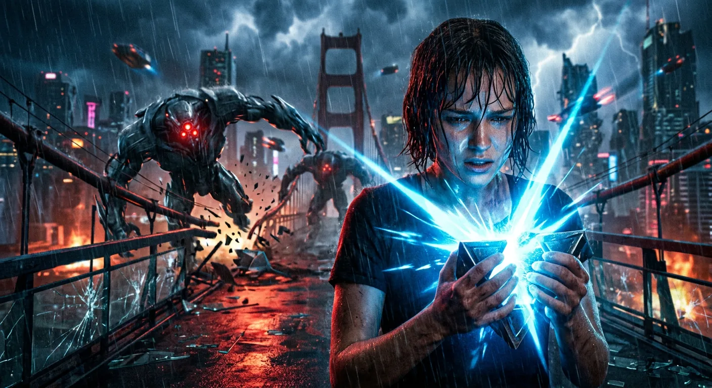
Madness, Violence, and Martian Discovery
On the sixth day of their entombment within the ruined house, the fragile alliance between the narrator and the curate shattered entirely. What had been an uneasy coexistence gave way to open warfare when the narrator discovered his companion drinking in the scullery—guzzling their precious stores without thought for tomorrow. A brief, desperate struggle ensued in the darkness, ending with a bottle of burgundy smashed upon the floor and two men standing breathless, ready to tear each other apart.
The narrator, recognizing that survival demanded discipline where instinct craved indulgence, positioned himself as guardian of their remaining provisions. He divided what food remained into rations calculated to sustain them for ten days, refusing to permit the curate another morsel until the following morning. What followed was a nightmarish vigil—the narrator sitting resolute and exhausted while the curate wept and pleaded and clawed at his own hunger. Hours stretched into what felt like eternities.
For two days more they grappled in the darkness, their conflict conducted in undertones lest they draw the attention of the Martians outside. The narrator tried everything within his power—violence, persuasion, even bribery with the last bottle of burgundy—but nothing could penetrate the fog that had descended upon the curate's mind. Slowly, terribly, the narrator came to understand that his companion had crossed beyond the threshold of reason into complete madness. The man who had once been a clergyman was now merely a creature of appetite and terror, incapable of the most basic precautions that might preserve their lives.
By the eighth day, the curate abandoned even the pretense of whispered conversation. His voice rose in wild pronouncements of divine judgment, torrents of anguished repentance for what he called his "acceptable folly"—the comfortable sermons he had delivered while the poor suffered and injustice flourished. Between these frenzied confessions came demands for food, then threats: he would shout, he would bring the Martians down upon them both. The narrator pleaded, commanded, but could not silence him.
On the ninth day, the curate rose to his knees and began to cry out his witness to the world above. "Woe unto this unfaithful city!" he screamed, his arms outstretched, his voice surely carrying to the pit beyond their walls. When he lurched toward the kitchen door, proclaiming his intention to go forth and speak the word of the Lord, the narrator's hand found the meat chopper hanging on the wall. In three strides he overtook the curate and, with one final gesture of mercy, struck him with the butt rather than the blade. The man fell forward and lay still upon the ground.
But the silence that followed was worse than any scream. A shadow fell across the gap in the wall, and the narrator looked up to behold the mechanical limbs of a Martian handling-machine probing through the debris. He glimpsed the dark eyes of the creature itself peering through a glass plate, and then a metallic tentacle—sinuous and searching—began to feel its way into the ruined house.
The narrator fled to the coal cellar, burying himself among firewood and lumps of coal, listening in frozen terror as the tentacle explored the kitchen, then the scullery, then found the cellar door itself. The Martians understood doors. When it opened, he watched the thing—like an elephant's trunk, like a black worm swaying its blind head—probe the darkness around him. It touched his boot heel. He bit his own hand to keep from screaming. After an eternity, it withdrew, taking only a lump of coal.
For two more days the narrator remained entombed in that coal cellar, not daring to move, not daring to seek the water his body screamed for, waiting in darkness absolute for death or deliverance.
It was not until the eleventh day that he found the courage to emerge from his hiding place and discover what remained of the world beyond.
Emergence from the Martian Pit
For three days, he existed in a state of wretched suspension between life and death, entombed in the darkness of the scullery while his body slowly consumed itself. The pantry yielded nothing—the Martians had stripped it bare the previous day—and this discovery shattered what little hope remained. On the eleventh and twelfth days, he took neither food nor water, sitting in the black silence as his strength drained away and his thoughts circled endlessly around the single, maddening subject of eating.
The silence itself became its own torment. The mechanical sounds from the pit—those terrible, industrious noises he had grown grimly accustomed to—had ceased entirely. He wondered if perhaps his senses were failing him, if deafness had crept upon him like another symptom of his slow decay. He lacked even the strength to crawl to the peephole and confirm what his ears told him.
By the twelfth day, thirst overcame caution. His throat burned so fiercely that he risked the creaking protest of the rain-water pump, drawing up two glasses of foul, blackened water. The liquid revived him somewhat, and when no questing tentacle came to investigate the noise, a fragile boldness took root. Through the haze of his suffering, memories of the curate surfaced unbidden—the manner of his death, the horror of what had followed—mingling with fevered dreams of impossible feasts and desperate escapes. The grey light filtering into his prison had transformed, taking on a red cast that his disordered mind read as the colour of blood itself.
On the fourteenth day, he discovered the source of that crimson glow: the red weed had grown across the breach in the wall, draping the kitchen in an alien twilight. And then, on the fifteenth morning, came a sound so mundane it seemed miraculous—the snuffling and scratching of a dog. A black nose appeared through a gap in the ruddy fronds, and hope flickered alongside darker calculations. Perhaps he could lure the creature inside, kill it, eat it. At the very least, he must silence it before its barking drew unwanted attention. But the dog retreated, and with its departure came a revelation: the pit had fallen utterly silent.
For hours he lay near the peephole, listening to nothing but the flutter of wings and hoarse croaking. When at last he dared to look, the sight that greeted him seemed impossible. The pit stood empty. The machinery had vanished. Only a mound of greyish-blue powder, some bars of aluminium, and a congregation of crows fighting over Martian-picked skeletons remained.
Trembling with equal measures of terror and desperate hope, he pushed through the curtain of red weed and emerged into a transformed world. Where comfortable houses and shady trees had once lined the streets of Sheen, now there stretched only ruins choked with alien vegetation—red cactus-shaped plants knee-high, their crimson threads scaling the dead and dying trees. The neighbouring homes stood gutted, roofless, their shattered windows staring blindly while the invasive weed flourished in their abandoned rooms. A gaunt cat slunk along a distant wall; birds hopped among the wreckage. But of human presence, there was no sign whatsoever.
After so long in darkness, the daylight seemed impossibly brilliant, the sky an almost painful blue. A gentle breeze stirred the endless carpet of red growth, and the sweetness of open air filled his lungs like a promise—or perhaps a warning of what revelations awaited him in the silent, alien landscape beyond.
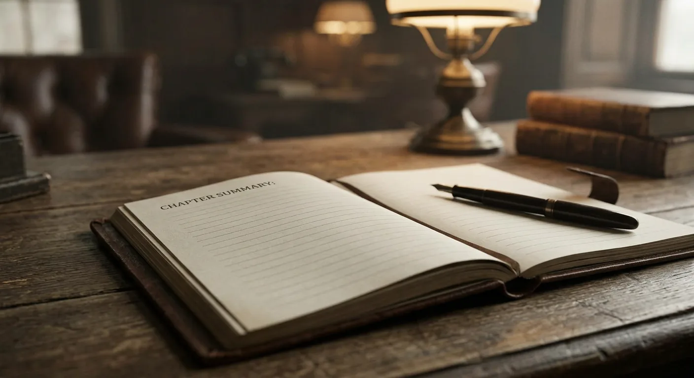
Dethronement Among the Red Weed
Emerging from that fetid refuge where I had cowered with thoughts bent only upon immediate survival, I found myself standing upon a mound, my legs unsteady beneath me, my mind wholly unprepared for the vision that awaited. I had anticipated ruin—the familiar made desolate—but what greeted my eyes was no earthly scene. It was as though I had stepped forth onto the surface of another world entirely.
In that moment, I experienced a terror that transcended the ordinary fears of men, yet which the beasts we have so long dominated must know intimately. I felt precisely as a rabbit might feel, returning to its burrow only to discover a gang of navvies tearing up the earth for new foundations. A cold understanding crept over me then—a sense of dethronement so profound it would shadow my thoughts for many days hence. I was no longer master of this world. I had become merely an animal among animals, cowering beneath the Martian heel. To lurk, to watch, to flee and hide—this was now the lot of humanity. The empire of man had passed away.
Yet such philosophic terror cannot long sustain itself against baser needs. The strangeness of my situation faded as swiftly as it had struck, supplanted by the ravening hunger of my long imprisonment. I spied, beyond a wall choked with red growth, a patch of garden yet unburied, and toward this I made my desperate way. The crimson weed rose knee-deep about me, sometimes to my very neck, yet its density afforded a curious comfort—a sense of concealment from whatever eyes might search for prey. I secured what poor vegetables I could find—young onions, gladiolus bulbs, carrots scarcely formed—and pressed on through that scarlet forest toward Kew. The trees themselves had been transformed, draped in creeping crimson, so that walking among them was like passing through an avenue of monstrous blood drops.
The red weed, I came to understand, had spread with terrible profusion wherever it encountered water. It had choked the Wey and the Thames alike, its titanic fronds transforming familiar meadows into crimson swamps. At Putney, the bridge lay nearly lost beneath its tangled growth; at Richmond, the waters spread in broad sheets across lands that had once been orderly and green. Yet this invader from another world would not long endure. A cankering disease—bacterial in nature, it was later surmised—seized upon the weed, and it succumbed with a swiftness that matched its earlier conquest. Having never faced such terrestrial opposition, it rotted like something already dead, its bleached fronds carried out to sea by the very waters that had fed its growth.
I drank deeply from the flooded shallows and pressed on toward Putney Common, where the landscape shifted from the alien to the merely ruined. Here stood houses with blinds drawn and doors shut, as though their occupants had merely stepped away for an afternoon. Yet I found no food within—others had come before me, ransacking what remained. I encountered no living soul, only hungry dogs that fled my approach and the scattered bones of cats, rabbits, and sheep picked utterly clean.
As darkness fell over Putney, I gazed down upon a scene of singular desolation—blackened trees, shattered ruins, and the river running red with dying weed. The silence pressed upon me like a physical weight. For a time, I became convinced that I stood alone upon the earth, the last of my kind, and that the Martians had moved on to spread their devastation elsewhere—to Berlin, perhaps, or Paris, or the cities of the north.
Yet even as despair threatened to overwhelm me, some stubborn instinct drove me forward into the gathering dark.
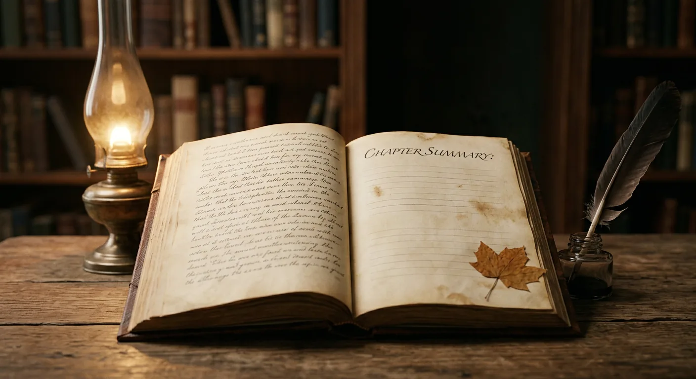
Refuge, Reflection, and Restless Dawn
After emerging from his entombment, the narrator spent his first night of proper rest in a deserted inn atop Putney Hill—though not without struggle. He broke in through unnecessary effort, ransacked every room for food, and found only a rat-gnawed crust, two tins of pineapple, and some stale biscuits to fill his empty pockets and emptier stomach. He lit no lamps, fearing the Martians might come hunting through the darkness, and sleep came fitfully, if at all.
Yet in that restless night, his mind grew clear for the first time since those terrible days with the curate. Three matters wrestled for dominion over his thoughts: the killing of the curate, the whereabouts of the Martians, and the fate of his wife. The first stirred no horror in him, no remorse—only the cold acknowledgment of a thing done, an inevitable consequence of circumstances beyond any man's control. He stood his own trial there in the silence, retracing every step of their doomed companionship, and set it all down honestly, leaving judgment to the reader. But when his thoughts turned to his wife, the night became terrible indeed. He found himself praying—truly praying, not the desperate mutterings of a man in extremity, but the steady pleading of one face to face with the darkness of God—praying that the Heat-Ray might have taken her swiftly, painlessly. Strange night! And stranger still that by morning he crept from the house like a rat, a creature beneath notice, scurrying beneath the dominion of new masters.
The morning brought brightness, pink skies, golden clouds—and the scattered wreckage of human flight: an abandoned cart, a trampled hat, bloodstained glass about an overturned trough. With vague plans of reaching Leatherhead, the narrator wandered toward Wimbledon Common, where yellow gorse bloomed and little frogs swarmed in a swampy hollow, their determination to live offering him an unexpected lesson. Then, sensing eyes upon him, he turned to find a man crouching in the bushes—filthy, armed with a cutlass, and hauntingly familiar.
It was the artilleryman from Woking, the same soldier who had stumbled into his garden in those first desperate hours. Recognition kindled between them, and under cover of the bushes they talked. The artilleryman spoke with grim conviction: humanity was beaten, finished, reduced to ants beneath the Martian heel. The invaders had established themselves across London, their lights blazing over Hampstead, and perhaps—most chilling of all—they had begun constructing flying machines. If they mastered flight, the world itself would lie open to them.
But the artilleryman had not surrendered. He had a plan—grandiose, elaborate, perhaps mad. Mankind must go underground, he insisted, into the drains and tunnels beneath London, forming bands of able-bodied survivors who would learn, watch, and wait. Eventually, they might seize the Martians' own machines and turn them against their masters. The narrator found himself swept along by the man's audacious vision, following him back to his lair in a coal cellar, where together they dug at a pitifully short burrow intended to reach the main drains.
Yet as the day wore on, doubts crept in. The artilleryman's tunnel was barely ten yards long after a week's work. Instead of digging, they reconnoitred from the rooftop, ate well, drank champagne, smoked cigars, and played cards late into the night. Strange mind of man, the narrator mused, that with extinction looming, they could sit absorbed in painted pasteboard!
By evening, standing alone on the roof and gazing at the violet glow of the red weed, at Mars burning red in the western sky, the narrator felt shame flood through him. He was a traitor to his wife and to his kind, idling here with this undisciplined dreamer. He resolved to leave at once and press on into London, where he might yet discover what had become of the Martians—and of humanity itself.
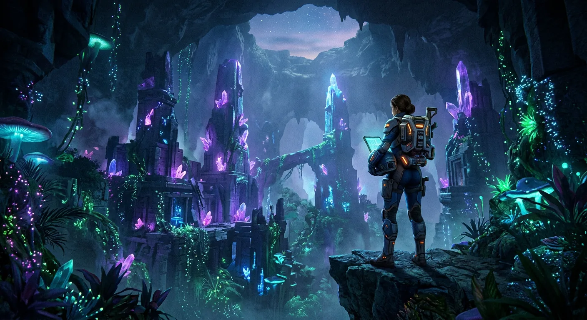
The Eerie Silence and Alien Wailing
After parting from the artilleryman, I descended the hill and made my way through Fulham, crossing a bridge half-strangled by the red weed—though even then its fronds showed patches of white where disease was claiming it. The journey revealed London in stages of ruin: a man blackened by dust, too drunk to speak, sprawled at a corner; bodies softened beneath blankets of black powder; a woman dead on a doorstep, her hand gashed, a shattered champagne bottle pooling beside her rusty dress.
The deeper I pressed into the city, the more profound the stillness became—not the stillness of death alone, but of suspense, of a metropolis condemned and waiting for annihilation to sweep through its remaining streets. In South Kensington, the silence gave way to something else entirely: a wailing that crept upon my senses, a sobbing alternation of two notes rising and falling without end. *Ulla, ulla, ulla, ulla*—as though that mighty desert of houses had found a voice for its fear and solitude.
The cry drew me northward through empty mansions toward Hyde Park, past an overturned bus and the picked-clean skeleton of a horse. The desolating sound worked upon my mind until the resolve that had sustained me crumbled. I grew weary, footsore, desperately thirsty. Why was I wandering alone through this city lying in state beneath its black shroud? I thought of poisons in chemists' shops, of the sodden wretches I had passed. At Oxford Street I broke into a public house, ate, drank, and collapsed upon a horsehair sofa.
I awoke at dusk, that dismal howling still threading through the air. I wandered through silent squares until, emerging from Baker Street, I saw the source at last: a Martian giant standing motionless near Regent's Park, its hood raised, crying endlessly into the gathering dark. I felt no terror—only exhaustion and a strange curiosity. Continuing along Park Road, I encountered packs of starving dogs fighting over carrion and came upon a wrecked handling-machine that had driven blindly into a house, its Martian pilot gnawed beyond recognition.
Then, as I crossed the canal bridge, the wailing ceased—cut off as though by a blade. The sudden silence struck me harder than any sound. London gazed at me spectrally; windows stared like the sockets of skulls. Terror seized me, and I fled toward Kilburn, hiding in a cabmen's shelter until past midnight. But before dawn, courage returned. I made my way toward Primrose Hill, where a third Martian stood towering against the fading stars.
An insane resolve possessed me: I would die and end it. Yet as I drew closer in the growing light, I saw black birds circling the hood, pecking at something within. My heart bounded. I ran through the red weed, waded breast-deep through rushing water, and climbed the great earthen rampart the Martians had built. There below me lay the invaders—*dead*. Slain not by any weapon of man, but by the humblest things upon this earth: bacteria, the microscopic allies against which their alien systems had no defence.
Nearly fifty of them lay scattered in that vast pit, overtaken by a death as incomprehensible to them as any could be. Standing upon the crest as the sun struck the world to fire, I gazed down at the silent machines and rotting forms. Death had come not a day too soon. London, the great Mother of Cities, stretched around me—saved as by a miracle.
And as I looked upon that wide expanse of abandoned houses and factories, thinking of all the hopes and lives that had built this human reef, I felt a wave of emotion near akin to tears. The healing would begin. Survivors would return; hammers would ring; life would pour again through empty streets. I extended my hands toward the sky and began thanking God.
Then, with overwhelming force, came the thought of my wife—and of the tender life that had ceased forever.
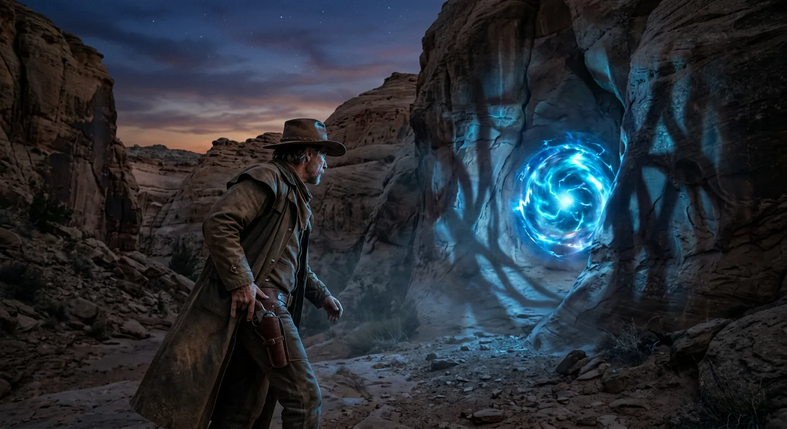
The World Revives in Ruin
And so he returned—not as a hero, not as a conqueror, but as a wanderer whose mind had shattered beneath the weight of deliverance.
The narrator recalls with strange clarity the moment he stood upon Primrose Hill, weeping and praising God at the sight of the fallen Martians. But then memory fails him utterly. Three days vanish into darkness, swallowed by a madness he cannot account for. He learns afterward that he was not the first to discover the Martian overthrow—another man had already reached St. Martin's-le-Grand and telegraphed the joyful news to Paris. From there it had flashed across the world like wildfire, and a thousand cities that had cowered in ghastly apprehension erupted into frantic illumination. Church bells that had been silent for a fortnight pealed across England. Men on bicycles tore down country lanes, shouting deliverance to gaunt figures who had abandoned all hope. Ships laden with corn and bread and meat churned toward London from across the Channel, across the Irish Sea, across the Atlantic itself.
But of this great rejoicing, the narrator remembers nothing. He had become a demented creature, wandering the streets of St. John's Wood, weeping and raving, singing mad doggerel about being the last man left alive. Kind strangers—whose names he cannot share, though gratitude compels him to acknowledge them—took him in, sheltered him, and protected him from himself. When his mind returned, they broke to him gently what they had learned: Leatherhead had been destroyed two days after his imprisonment in the ruined house. A Martian had swept it out of existence without provocation, as a boy might crush an anthill in mere wantonness of power. Every soul within had perished.
He was a lonely man now, and a sad one. For four days he remained with these strangers, but a vague craving grew within him—a hopeless desire to look once more upon whatever remained of his former life, to feast upon his own misery. They dissuaded him, but at last the impulse proved irresistible, and with tears and faithful promises to return, he departed into streets that had lately been dark and strange and empty.
Now those streets teemed with returning life. Shops stood open; drinking fountains ran with water. Yet the people bore the marks of their ordeal—yellow skin, shaggy hair, bright desperate eyes, and dirty rags. Their faces showed either leaping exultation or grim resolution. London seemed a city of tramps, fed by bread from the French government, patrolled by haggard special constables. At Wellington Street, the red weed clambered over Waterloo Bridge, and against it fluttered the placard of the *Daily Mail*, the first newspaper to resume publication.
He took a free train from Waterloo, sitting alone with folded arms as sunlit devastation flowed past the windows. The houses outside the terminus were blackened ruins; Clapham Junction lay grimy with the powder of Black Smoke. The countryside beyond was gaunt and unfamiliar, every stream choked with masses of red weed like butcher's meat and pickled cabbage. Near Woking, a Union Jack flapped cheerfully over the sixth cylinder, surrounded by sappers and crimson nursery grounds painful to behold.
At last he reached his home. The door had been forced open. The house stood empty, bearing the marks of his flight—muddy footsteps on the stairs, the abandoned paper on his writing desk, its final sentence left forever unfinished: *"In about two hundred years, we may expect—"* In the dining room, the mutton and bread had decayed where he and the artilleryman had left them. His faint hope crumbled to folly.
Then a voice spoke behind him—and there, standing amazed and afraid in the open French window, were his cousin and his wife. She swayed, hand at her throat, and he stepped forward to catch her in his arms.
The world had ended and begun again, and somehow, against all reason, they had found their way back to one another.
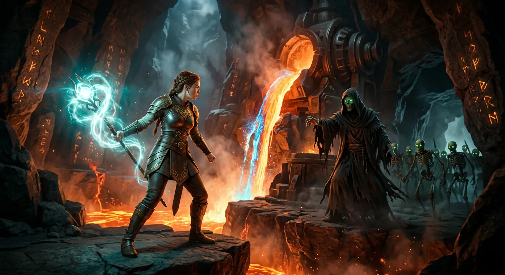
Humanity's Uncertain Future Among the Stars
As I bring this account to its close, I find myself contending with the peculiar frustration of unanswered questions—mysteries that shall perhaps vex philosophers and men of science for generations hence. I am no physiologist, merely a speculator in matters of abstract thought, yet I have accepted Carver's hypothesis regarding the Martians' swift demise as near enough to proven fact. The invaders, it would seem, fell not to our cannons or our courage, but to the humblest of Earth's inhabitants: bacteria, those microscopic agents of decay against which their Martian constitutions possessed no defence. That no foreign organisms were discovered within their examined corpses, that they left their dead unburied with apparent indifference to putrefaction—these observations lend weight to the conclusion, though certainty eludes us still.
Much remains shrouded in ignorance. The composition of the Black Smoke, that suffocating instrument of massacre, defies complete analysis, though spectral examination hints at some unknown element mingling with argon to poison human blood. The Heat-Ray's mechanism continues to baffle our finest minds, particularly after the catastrophic accidents at Ealing and South Kensington discouraged further inquiry. The brown scum that choked the Thames went unexamined, and now no samples survive.
Yet these scientific puzzles pale beside the graver question that haunts my waking hours: shall they come again? Mars approaches opposition with each turning year, and I, for one, watch the heavens with mounting apprehension. We ought to prepare—to locate their launching positions, to destroy their cylinders before the creatures within can emerge, to stand ready with artillery and dynamite. They have squandered the advantage of surprise; perhaps they recognise this themselves.
Indeed, there are whispers that the Martians have turned their ambitions elsewhere. Lessing has presented compelling evidence of a landing upon Venus—strange luminous markings upon that world coinciding with dark sinuous patterns on Mars itself. Perhaps our sister planet now bears the burden we so narrowly escaped.
Whatever their designs, humanity's vision has been forever altered. We can no longer regard our little Earth as a fortress secure against the cosmos. From the vast deeps of space, good or evil may descend upon us without warning. Yet perhaps this terrible visitation carries some ultimate benefit—it has shattered our complacency, gifted us with undreamt-of scientific knowledge, and fostered a nascent sense of human brotherhood. If Martians can bridge the gulf to Venus, why not men? When our dying sun renders Earth uninhabitable, the thread of terrestrial life may yet stretch outward to catch new worlds within its grasp.
But these are distant dreams. The present offers only uncertainty and the lingering trauma of survival. I sit writing by lamplight, and without warning the quiet of my study gives way to visions of burning valleys and desolate streets. I walk among the cheerful crowds of London, yet they seem to me phantasms haunting a dead city. I stand upon Primrose Hill, watching children play beside the rusting Martian machine, and remember that same ground silent beneath an alien dawn.
Strangest of all is to hold my wife's hand—my wife, whom I had mourned as dead, who had mourned me in equal measure—and to know that we have emerged, improbably, into this fragile peace.
*The war of the worlds had ended, but its shadow would stretch across the years to come, shaping the dreams and dreads of all who lived to remember.*
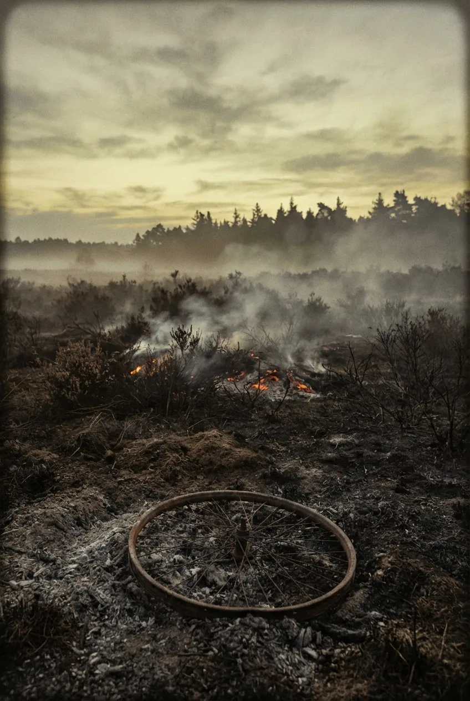